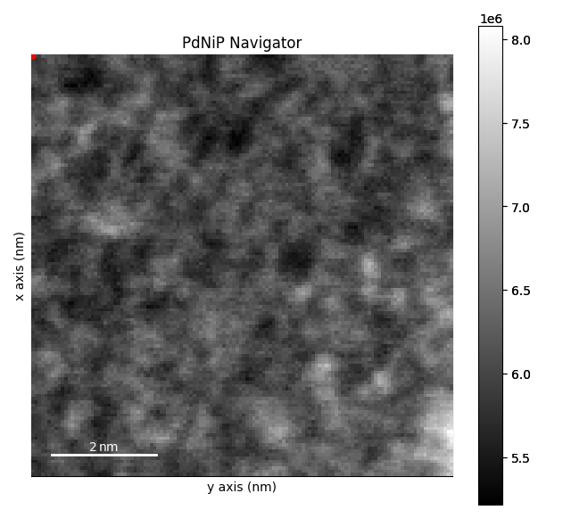
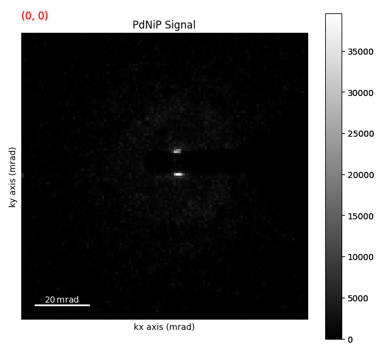
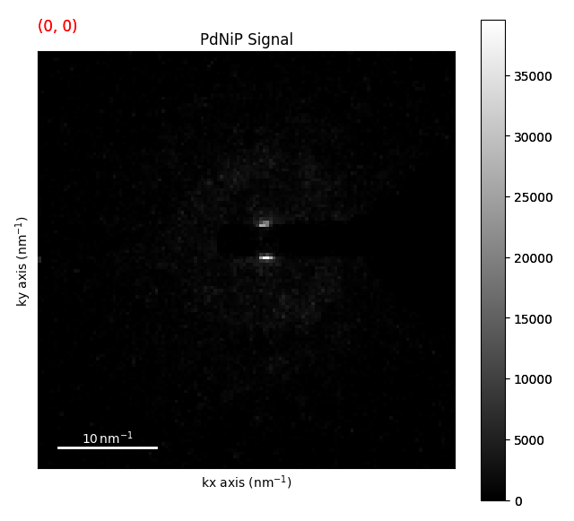
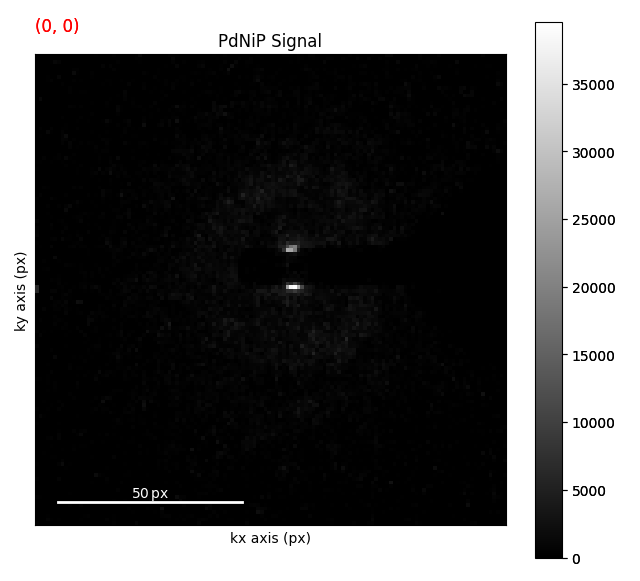
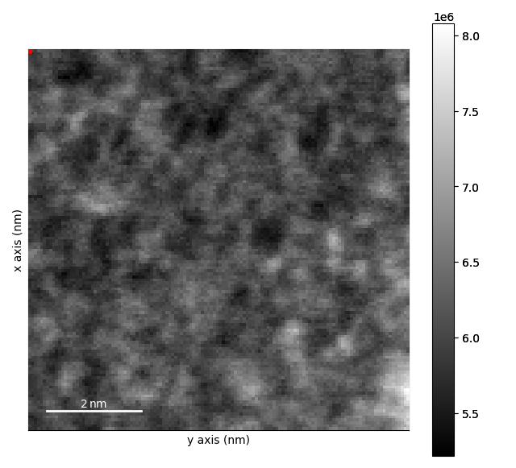

Note
Go to the end to download the full example code.
Flat Ewald’s Sphere Assumption#
In most cases, the Ewald’s sphere is assumed to be flat for diffraction patterns when doing 4D STEM. This is almost always a good assumption. That being said there are a couple of common units used with 4D STEM (e.g. nm-1, mrad, pixel coordinates) and it is important to understand how these units relate to each other. These units are also related to the camera length, pixel size, and beam energy (wavelength) of the microscope. In reality the beam energy is really the only thing that you need to know.
Let’s look at an example of this using the ZrNb Precipitate dataset.
from pyxem.data import pdnip_glass
g = pdnip_glass(allow_download=True)
g.calibration.beam_energy = "200 kV"
g.calibration.convergance_angle = "1 mrad" # set the convergence angle
/opt/hostedtoolcache/Python/3.12.12/x64/lib/python3.12/site-packages/hyperspy/misc/utils.py:72: VisibleDeprecationWarning: `_get_block_pattern` has moved to `hyperspy.misc.dask_utils`. It is for internal use only and may be removed in the future.
warnings.warn(
Downloading file 'PdNiP.zspy' from 'https://zenodo.org/records/15490547/files/PdNiP.zspy' to '/home/runner/.cache/pyxem/0.21.0'.
0%| | 0.00/305M [00:00<?, ?B/s]
0%| | 10.2k/305M [00:00<58:35, 86.7kB/s]
0%| | 22.5k/305M [00:00<1:04:43, 78.4kB/s]
0%| | 90.1k/305M [00:00<21:10, 240kB/s]
0%| | 181k/305M [00:00<13:48, 368kB/s]
0%| | 379k/305M [00:00<07:31, 674kB/s]
0%| | 772k/305M [00:00<04:00, 1.26MB/s]
0%|▏ | 1.40M/305M [00:01<02:06, 2.39MB/s]
1%|▏ | 1.68M/305M [00:01<02:10, 2.31MB/s]
1%|▏ | 1.94M/305M [00:01<02:14, 2.25MB/s]
1%|▎ | 2.18M/305M [00:01<02:32, 1.98MB/s]
1%|▎ | 2.40M/305M [00:01<02:32, 1.98MB/s]
1%|▎ | 2.61M/305M [00:01<02:42, 1.85MB/s]
1%|▎ | 2.80M/305M [00:01<03:35, 1.40MB/s]
1%|▎ | 2.96M/305M [00:02<03:55, 1.28MB/s]
1%|▍ | 3.10M/305M [00:02<04:29, 1.12MB/s]
1%|▍ | 3.23M/305M [00:02<04:28, 1.12MB/s]
1%|▍ | 3.37M/305M [00:02<04:17, 1.17MB/s]
1%|▍ | 3.52M/305M [00:02<04:00, 1.25MB/s]
1%|▍ | 3.65M/305M [00:02<03:58, 1.26MB/s]
1%|▍ | 3.79M/305M [00:02<04:22, 1.14MB/s]
1%|▍ | 3.95M/305M [00:02<03:57, 1.26MB/s]
1%|▌ | 4.15M/305M [00:03<03:30, 1.43MB/s]
1%|▌ | 4.34M/305M [00:03<03:17, 1.52MB/s]
1%|▌ | 4.51M/305M [00:03<03:16, 1.53MB/s]
2%|▌ | 4.67M/305M [00:03<04:49, 1.04MB/s]
2%|▌ | 4.80M/305M [00:03<06:09, 811kB/s]
2%|▋ | 4.90M/305M [00:04<07:06, 703kB/s]
2%|▋ | 4.99M/305M [00:04<07:21, 679kB/s]
2%|▋ | 5.07M/305M [00:04<07:10, 696kB/s]
2%|▋ | 5.20M/305M [00:04<06:09, 810kB/s]
2%|▋ | 5.40M/305M [00:04<04:31, 1.10MB/s]
2%|▋ | 5.55M/305M [00:04<04:13, 1.18MB/s]
2%|▋ | 5.70M/305M [00:04<04:00, 1.24MB/s]
2%|▋ | 5.84M/305M [00:04<03:57, 1.26MB/s]
2%|▋ | 6.00M/305M [00:04<03:44, 1.33MB/s]
2%|▊ | 6.15M/305M [00:05<03:38, 1.37MB/s]
2%|▊ | 6.31M/305M [00:05<03:31, 1.41MB/s]
2%|▊ | 6.45M/305M [00:05<03:37, 1.37MB/s]
2%|▊ | 6.59M/305M [00:05<04:41, 1.06MB/s]
2%|▊ | 6.76M/305M [00:05<04:08, 1.20MB/s]
2%|▊ | 7.01M/305M [00:05<03:22, 1.47MB/s]
2%|▉ | 7.24M/305M [00:05<02:58, 1.67MB/s]
2%|▉ | 7.42M/305M [00:05<02:58, 1.66MB/s]
2%|▉ | 7.59M/305M [00:06<03:16, 1.51MB/s]
3%|▉ | 7.75M/305M [00:06<03:57, 1.25MB/s]
3%|▉ | 7.89M/305M [00:06<04:23, 1.13MB/s]
3%|█ | 8.02M/305M [00:06<04:19, 1.14MB/s]
3%|█ | 8.14M/305M [00:06<04:23, 1.13MB/s]
3%|█ | 8.26M/305M [00:06<04:22, 1.13MB/s]
3%|█ | 8.38M/305M [00:06<04:22, 1.13MB/s]
3%|█ | 8.51M/305M [00:06<04:14, 1.16MB/s]
3%|█ | 8.64M/305M [00:07<04:09, 1.19MB/s]
3%|█ | 8.77M/305M [00:07<04:26, 1.11MB/s]
3%|█ | 8.91M/305M [00:07<04:08, 1.19MB/s]
3%|█▏ | 9.08M/305M [00:07<03:48, 1.29MB/s]
3%|█▏ | 9.28M/305M [00:07<03:21, 1.47MB/s]
3%|█▏ | 9.43M/305M [00:07<03:20, 1.47MB/s]
3%|█▏ | 9.59M/305M [00:07<03:18, 1.48MB/s]
3%|█▏ | 9.86M/305M [00:07<02:41, 1.82MB/s]
3%|█▎ | 10.1M/305M [00:07<02:31, 1.94MB/s]
3%|█▎ | 10.3M/305M [00:08<02:55, 1.67MB/s]
3%|█▎ | 10.5M/305M [00:08<03:02, 1.61MB/s]
3%|█▎ | 10.6M/305M [00:08<03:41, 1.33MB/s]
4%|█▎ | 10.8M/305M [00:08<04:19, 1.13MB/s]
4%|█▎ | 10.9M/305M [00:08<04:44, 1.03MB/s]
4%|█▍ | 11.0M/305M [00:08<05:29, 890kB/s]
4%|█▍ | 11.1M/305M [00:09<06:04, 806kB/s]
4%|█▍ | 11.2M/305M [00:09<05:20, 914kB/s]
4%|█▍ | 11.3M/305M [00:09<05:23, 905kB/s]
4%|█▍ | 11.4M/305M [00:09<05:34, 876kB/s]
4%|█▍ | 11.6M/305M [00:09<04:34, 1.07MB/s]
4%|█▍ | 11.8M/305M [00:09<03:42, 1.32MB/s]
4%|█▌ | 12.0M/305M [00:09<03:03, 1.59MB/s]
4%|█▌ | 12.3M/305M [00:09<02:39, 1.83MB/s]
4%|█▌ | 12.5M/305M [00:09<02:40, 1.81MB/s]
4%|█▌ | 12.7M/305M [00:09<02:49, 1.72MB/s]
4%|█▌ | 12.8M/305M [00:10<03:07, 1.56MB/s]
4%|█▌ | 13.0M/305M [00:10<03:02, 1.60MB/s]
4%|█▋ | 13.2M/305M [00:10<03:02, 1.60MB/s]
4%|█▋ | 13.4M/305M [00:10<02:57, 1.64MB/s]
4%|█▋ | 13.5M/305M [00:10<03:12, 1.51MB/s]
4%|█▊ | 13.7M/305M [00:10<05:17, 915kB/s]
5%|█▋ | 13.9M/305M [00:11<04:20, 1.12MB/s]
5%|█▊ | 14.1M/305M [00:11<03:40, 1.32MB/s]
5%|█▊ | 14.3M/305M [00:11<03:32, 1.36MB/s]
5%|█▊ | 14.4M/305M [00:11<03:32, 1.37MB/s]
5%|█▊ | 14.6M/305M [00:11<03:16, 1.48MB/s]
5%|█▊ | 14.8M/305M [00:11<03:11, 1.51MB/s]
5%|█▊ | 14.9M/305M [00:11<03:20, 1.44MB/s]
5%|█▉ | 15.1M/305M [00:11<03:31, 1.37MB/s]
5%|█▉ | 15.2M/305M [00:11<03:51, 1.25MB/s]
5%|█▉ | 15.3M/305M [00:12<04:00, 1.20MB/s]
5%|█▉ | 15.5M/305M [00:12<03:47, 1.27MB/s]
5%|█▉ | 15.7M/305M [00:12<03:38, 1.32MB/s]
5%|█▉ | 15.9M/305M [00:12<03:13, 1.49MB/s]
5%|██ | 16.1M/305M [00:12<02:41, 1.78MB/s]
5%|██ | 16.3M/305M [00:12<02:29, 1.92MB/s]
5%|██ | 16.5M/305M [00:12<02:36, 1.84MB/s]
5%|██ | 16.7M/305M [00:12<03:04, 1.56MB/s]
6%|██ | 16.9M/305M [00:13<04:08, 1.16MB/s]
6%|██▏ | 17.0M/305M [00:13<04:32, 1.05MB/s]
6%|██▏ | 17.2M/305M [00:13<04:41, 1.02MB/s]
6%|██▏ | 17.3M/305M [00:13<05:14, 913kB/s]
6%|██▏ | 17.4M/305M [00:13<05:24, 886kB/s]
6%|██▏ | 17.5M/305M [00:13<05:12, 918kB/s]
6%|██▏ | 17.6M/305M [00:13<04:39, 1.03MB/s]
6%|██▏ | 17.7M/305M [00:14<04:42, 1.01MB/s]
6%|██▏ | 17.8M/305M [00:14<04:37, 1.03MB/s]
6%|██▏ | 18.0M/305M [00:14<04:06, 1.16MB/s]
6%|██▎ | 18.2M/305M [00:14<03:55, 1.21MB/s]
6%|██▎ | 18.4M/305M [00:14<03:24, 1.40MB/s]
6%|██▎ | 18.5M/305M [00:14<03:54, 1.22MB/s]
6%|██▎ | 18.6M/305M [00:14<04:19, 1.10MB/s]
6%|██▎ | 18.8M/305M [00:14<03:56, 1.21MB/s]
6%|██▎ | 18.9M/305M [00:14<04:21, 1.09MB/s]
6%|██▎ | 19.0M/305M [00:15<04:31, 1.05MB/s]
6%|██▍ | 19.2M/305M [00:15<04:16, 1.11MB/s]
6%|██▍ | 19.3M/305M [00:15<04:05, 1.16MB/s]
6%|██▍ | 19.4M/305M [00:15<04:10, 1.14MB/s]
6%|██▌ | 19.5M/305M [00:15<04:55, 966kB/s]
6%|██▌ | 19.6M/305M [00:15<04:54, 967kB/s]
7%|██▍ | 19.8M/305M [00:15<04:06, 1.15MB/s]
7%|██▍ | 19.9M/305M [00:15<04:04, 1.17MB/s]
7%|██▌ | 20.0M/305M [00:16<04:05, 1.16MB/s]
7%|██▌ | 20.2M/305M [00:16<04:04, 1.16MB/s]
7%|██▌ | 20.3M/305M [00:16<03:35, 1.32MB/s]
7%|██▌ | 20.6M/305M [00:16<02:56, 1.61MB/s]
7%|██▌ | 20.7M/305M [00:16<03:17, 1.44MB/s]
7%|██▌ | 20.9M/305M [00:16<04:09, 1.14MB/s]
7%|██▌ | 21.0M/305M [00:16<04:27, 1.06MB/s]
7%|██▋ | 21.2M/305M [00:16<04:12, 1.12MB/s]
7%|██▋ | 21.3M/305M [00:17<04:50, 976kB/s]
7%|██▋ | 21.4M/305M [00:17<04:48, 980kB/s]
7%|██▊ | 21.5M/305M [00:17<04:46, 988kB/s]
7%|██▊ | 21.6M/305M [00:17<04:57, 952kB/s]
7%|██▊ | 21.7M/305M [00:17<04:54, 960kB/s]
7%|██▊ | 21.8M/305M [00:17<05:05, 927kB/s]
7%|██▋ | 21.9M/305M [00:17<04:30, 1.05MB/s]
7%|██▊ | 22.1M/305M [00:17<03:47, 1.24MB/s]
7%|██▊ | 22.3M/305M [00:17<03:18, 1.42MB/s]
7%|██▊ | 22.5M/305M [00:18<03:19, 1.41MB/s]
7%|██▊ | 22.6M/305M [00:18<03:19, 1.41MB/s]
7%|██▊ | 22.7M/305M [00:18<03:23, 1.39MB/s]
8%|██▊ | 22.9M/305M [00:18<03:29, 1.35MB/s]
8%|██▊ | 23.0M/305M [00:18<03:54, 1.20MB/s]
8%|██▉ | 23.1M/305M [00:18<04:13, 1.11MB/s]
8%|██▉ | 23.3M/305M [00:18<04:17, 1.09MB/s]
8%|██▉ | 23.4M/305M [00:18<04:24, 1.06MB/s]
8%|███ | 23.5M/305M [00:19<05:43, 819kB/s]
8%|███ | 23.6M/305M [00:19<05:30, 850kB/s]
8%|███ | 23.7M/305M [00:19<04:50, 966kB/s]
8%|██▉ | 23.9M/305M [00:19<04:03, 1.16MB/s]
8%|███ | 24.1M/305M [00:19<03:28, 1.35MB/s]
8%|███ | 24.3M/305M [00:19<02:44, 1.70MB/s]
8%|███ | 24.5M/305M [00:19<02:51, 1.63MB/s]
8%|███ | 24.7M/305M [00:19<03:07, 1.50MB/s]
8%|███ | 24.8M/305M [00:20<03:39, 1.27MB/s]
8%|███ | 25.0M/305M [00:20<03:41, 1.26MB/s]
8%|███▏ | 25.1M/305M [00:20<03:31, 1.32MB/s]
8%|███▏ | 25.3M/305M [00:20<04:03, 1.15MB/s]
8%|███▏ | 25.4M/305M [00:20<04:00, 1.16MB/s]
8%|███▏ | 25.5M/305M [00:20<04:08, 1.12MB/s]
8%|███▏ | 25.6M/305M [00:20<04:18, 1.08MB/s]
8%|███▏ | 25.7M/305M [00:20<04:38, 1.00MB/s]
8%|███▏ | 25.8M/305M [00:20<04:37, 1.00MB/s]
9%|███▏ | 26.0M/305M [00:21<04:12, 1.11MB/s]
9%|███▎ | 26.1M/305M [00:21<03:53, 1.19MB/s]
9%|███▎ | 26.2M/305M [00:21<04:07, 1.12MB/s]
9%|███▎ | 26.4M/305M [00:21<03:48, 1.22MB/s]
9%|███▎ | 26.6M/305M [00:21<03:01, 1.54MB/s]
9%|███▎ | 26.9M/305M [00:21<02:35, 1.79MB/s]
9%|███▍ | 27.1M/305M [00:21<02:32, 1.81MB/s]
9%|███▍ | 27.3M/305M [00:21<02:57, 1.56MB/s]
9%|███▍ | 27.4M/305M [00:22<03:32, 1.31MB/s]
9%|███▍ | 27.6M/305M [00:22<03:43, 1.24MB/s]
9%|███▍ | 27.7M/305M [00:22<04:05, 1.13MB/s]
9%|███▌ | 27.8M/305M [00:22<04:42, 981kB/s]
9%|███▌ | 27.9M/305M [00:22<05:35, 824kB/s]
9%|███▌ | 28.0M/305M [00:22<05:43, 806kB/s]
9%|███▌ | 28.2M/305M [00:22<04:55, 935kB/s]
9%|███▌ | 28.3M/305M [00:23<04:20, 1.06MB/s]
9%|███▌ | 28.5M/305M [00:23<04:06, 1.12MB/s]
9%|███▌ | 28.6M/305M [00:23<03:46, 1.22MB/s]
9%|███▌ | 28.9M/305M [00:23<02:55, 1.57MB/s]
10%|███▋ | 29.1M/305M [00:23<02:37, 1.75MB/s]
10%|███▋ | 29.4M/305M [00:23<02:12, 2.07MB/s]
10%|███▋ | 29.6M/305M [00:23<02:15, 2.03MB/s]
10%|███▋ | 29.9M/305M [00:23<02:12, 2.08MB/s]
10%|███▊ | 30.1M/305M [00:24<03:01, 1.51MB/s]
10%|███▊ | 30.2M/305M [00:24<03:04, 1.49MB/s]
10%|███▊ | 30.4M/305M [00:24<02:55, 1.56MB/s]
10%|███▊ | 30.6M/305M [00:24<03:05, 1.47MB/s]
10%|███▊ | 30.8M/305M [00:24<03:13, 1.42MB/s]
10%|███▊ | 30.9M/305M [00:24<03:22, 1.35MB/s]
10%|███▊ | 31.0M/305M [00:24<03:50, 1.19MB/s]
10%|███▉ | 31.2M/305M [00:25<05:08, 886kB/s]
10%|████ | 31.3M/305M [00:25<05:15, 868kB/s]
10%|███▉ | 31.5M/305M [00:25<04:14, 1.07MB/s]
10%|███▉ | 31.6M/305M [00:25<03:54, 1.16MB/s]
10%|███▉ | 31.7M/305M [00:25<04:02, 1.13MB/s]
10%|███▉ | 31.9M/305M [00:25<04:03, 1.12MB/s]
10%|███▉ | 32.0M/305M [00:25<04:00, 1.13MB/s]
11%|████ | 32.1M/305M [00:25<03:53, 1.17MB/s]
11%|████ | 32.3M/305M [00:25<03:12, 1.41MB/s]
11%|████ | 32.5M/305M [00:26<02:49, 1.61MB/s]
11%|████ | 32.7M/305M [00:26<02:32, 1.78MB/s]
11%|████ | 33.0M/305M [00:26<02:18, 1.95MB/s]
11%|████▏ | 33.2M/305M [00:26<02:49, 1.61MB/s]
11%|████▏ | 33.4M/305M [00:26<02:57, 1.53MB/s]
11%|████▏ | 33.5M/305M [00:26<02:59, 1.51MB/s]
11%|████▏ | 33.7M/305M [00:26<03:19, 1.36MB/s]
11%|████▏ | 33.8M/305M [00:26<03:36, 1.25MB/s]
11%|████▏ | 34.0M/305M [00:27<03:18, 1.36MB/s]
11%|████▎ | 34.2M/305M [00:27<03:23, 1.33MB/s]
11%|████▎ | 34.3M/305M [00:27<03:28, 1.29MB/s]
11%|████▎ | 34.4M/305M [00:27<03:24, 1.32MB/s]
11%|████▎ | 34.6M/305M [00:27<03:04, 1.47MB/s]
11%|████▎ | 34.8M/305M [00:27<02:46, 1.62MB/s]
12%|████▎ | 35.1M/305M [00:27<02:34, 1.74MB/s]
12%|████▍ | 35.2M/305M [00:27<02:46, 1.62MB/s]
12%|████▍ | 35.4M/305M [00:27<02:51, 1.57MB/s]
12%|████▍ | 35.6M/305M [00:28<02:59, 1.50MB/s]
12%|████▍ | 35.8M/305M [00:28<02:43, 1.65MB/s]
12%|████▍ | 36.0M/305M [00:28<02:30, 1.79MB/s]
12%|████▌ | 36.2M/305M [00:28<02:48, 1.59MB/s]
12%|████▌ | 36.3M/305M [00:28<02:54, 1.53MB/s]
12%|████▌ | 36.5M/305M [00:28<02:58, 1.50MB/s]
12%|████▌ | 36.7M/305M [00:28<02:51, 1.56MB/s]
12%|████▌ | 36.8M/305M [00:28<02:56, 1.52MB/s]
12%|████▌ | 37.0M/305M [00:28<02:42, 1.65MB/s]
12%|████▋ | 37.2M/305M [00:29<02:41, 1.65MB/s]
12%|████▋ | 37.4M/305M [00:29<02:46, 1.60MB/s]
12%|████▋ | 37.5M/305M [00:29<03:05, 1.44MB/s]
12%|████▋ | 37.7M/305M [00:29<03:01, 1.47MB/s]
12%|████▋ | 37.9M/305M [00:29<02:44, 1.62MB/s]
12%|████▋ | 38.1M/305M [00:29<02:40, 1.66MB/s]
13%|████▊ | 38.3M/305M [00:29<02:30, 1.77MB/s]
13%|████▊ | 38.5M/305M [00:29<02:35, 1.72MB/s]
13%|████▊ | 38.6M/305M [00:29<02:48, 1.58MB/s]
13%|████▊ | 38.9M/305M [00:30<02:32, 1.74MB/s]
13%|████▊ | 39.0M/305M [00:30<02:35, 1.71MB/s]
13%|████▉ | 39.2M/305M [00:30<03:13, 1.37MB/s]
13%|████▉ | 39.4M/305M [00:30<03:47, 1.17MB/s]
13%|████▉ | 39.5M/305M [00:30<03:53, 1.14MB/s]
13%|████▉ | 39.6M/305M [00:30<03:55, 1.13MB/s]
13%|████▉ | 39.8M/305M [00:30<03:41, 1.20MB/s]
13%|████▉ | 39.9M/305M [00:30<03:35, 1.23MB/s]
13%|████▉ | 40.0M/305M [00:31<03:35, 1.23MB/s]
13%|█████ | 40.2M/305M [00:31<03:31, 1.25MB/s]
13%|█████▏ | 40.3M/305M [00:31<04:26, 990kB/s]
13%|█████▏ | 40.4M/305M [00:31<04:43, 934kB/s]
13%|█████▏ | 40.5M/305M [00:31<04:30, 975kB/s]
13%|█████ | 40.7M/305M [00:31<04:04, 1.08MB/s]
13%|█████ | 40.8M/305M [00:31<04:04, 1.08MB/s]
13%|█████ | 40.9M/305M [00:31<03:55, 1.12MB/s]
13%|█████ | 41.0M/305M [00:32<03:54, 1.12MB/s]
14%|█████▏ | 41.2M/305M [00:32<03:14, 1.35MB/s]
14%|█████▏ | 41.4M/305M [00:32<02:58, 1.48MB/s]
14%|█████▏ | 41.6M/305M [00:32<03:16, 1.34MB/s]
14%|█████▏ | 41.7M/305M [00:32<03:37, 1.21MB/s]
14%|█████▏ | 41.8M/305M [00:32<03:56, 1.11MB/s]
14%|█████▏ | 42.0M/305M [00:32<04:08, 1.06MB/s]
14%|█████▏ | 42.1M/305M [00:32<04:18, 1.01MB/s]
14%|█████▍ | 42.2M/305M [00:33<04:36, 949kB/s]
14%|█████▍ | 42.3M/305M [00:33<04:55, 887kB/s]
14%|█████▍ | 42.3M/305M [00:33<05:41, 767kB/s]
14%|█████▍ | 42.5M/305M [00:33<04:38, 941kB/s]
14%|█████▎ | 42.7M/305M [00:33<03:58, 1.10MB/s]
14%|█████▎ | 42.9M/305M [00:33<03:12, 1.36MB/s]
14%|█████▎ | 43.1M/305M [00:33<02:58, 1.46MB/s]
14%|█████▍ | 43.3M/305M [00:33<02:37, 1.66MB/s]
14%|█████▍ | 43.5M/305M [00:33<02:16, 1.92MB/s]
14%|█████▍ | 43.8M/305M [00:34<02:08, 2.03MB/s]
14%|█████▍ | 44.0M/305M [00:34<02:05, 2.07MB/s]
15%|█████▌ | 44.2M/305M [00:34<02:09, 2.01MB/s]
15%|█████▌ | 44.4M/305M [00:34<02:25, 1.78MB/s]
15%|█████▌ | 44.6M/305M [00:34<02:39, 1.63MB/s]
15%|█████▌ | 44.9M/305M [00:34<02:24, 1.80MB/s]
15%|█████▋ | 45.1M/305M [00:34<02:05, 2.07MB/s]
15%|█████▋ | 45.4M/305M [00:34<02:00, 2.16MB/s]
15%|█████▋ | 45.6M/305M [00:34<01:54, 2.26MB/s]
15%|█████▋ | 45.9M/305M [00:35<01:59, 2.16MB/s]
15%|█████▋ | 46.1M/305M [00:35<02:02, 2.12MB/s]
15%|█████▊ | 46.3M/305M [00:35<02:02, 2.11MB/s]
15%|█████▊ | 46.5M/305M [00:35<02:01, 2.13MB/s]
15%|█████▊ | 46.7M/305M [00:35<02:05, 2.05MB/s]
15%|█████▊ | 46.9M/305M [00:35<02:33, 1.68MB/s]
15%|█████▉ | 47.1M/305M [00:35<02:34, 1.67MB/s]
16%|█████▉ | 47.3M/305M [00:35<02:38, 1.62MB/s]
16%|██████ | 47.5M/305M [00:36<05:13, 820kB/s]
16%|██████ | 47.6M/305M [00:36<04:52, 877kB/s]
16%|█████▉ | 47.8M/305M [00:36<04:11, 1.02MB/s]
16%|█████▉ | 48.0M/305M [00:36<03:20, 1.28MB/s]
16%|██████ | 48.2M/305M [00:36<03:13, 1.33MB/s]
16%|██████ | 48.3M/305M [00:36<03:09, 1.36MB/s]
16%|██████ | 48.5M/305M [00:37<03:38, 1.17MB/s]
16%|██████ | 48.6M/305M [00:37<03:54, 1.09MB/s]
16%|██████▏ | 48.7M/305M [00:37<04:21, 980kB/s]
16%|██████▎ | 48.8M/305M [00:37<04:35, 928kB/s]
16%|██████▎ | 48.9M/305M [00:37<05:35, 761kB/s]
16%|██████▎ | 49.0M/305M [00:37<05:29, 775kB/s]
16%|██████▎ | 49.2M/305M [00:37<04:52, 872kB/s]
16%|██████▏ | 49.4M/305M [00:38<03:50, 1.11MB/s]
16%|██████▎ | 49.5M/305M [00:38<04:25, 960kB/s]
16%|██████▎ | 49.6M/305M [00:38<04:21, 976kB/s]
16%|██████▎ | 49.7M/305M [00:38<04:44, 897kB/s]
16%|██████▎ | 49.8M/305M [00:38<05:04, 837kB/s]
16%|██████▍ | 49.9M/305M [00:38<04:48, 882kB/s]
16%|██████▏ | 50.1M/305M [00:38<03:35, 1.18MB/s]
17%|██████▎ | 50.4M/305M [00:38<02:45, 1.54MB/s]
17%|██████▎ | 50.5M/305M [00:39<02:36, 1.62MB/s]
17%|██████▎ | 50.7M/305M [00:39<03:05, 1.37MB/s]
17%|██████▎ | 50.9M/305M [00:39<03:52, 1.09MB/s]
17%|██████▌ | 51.0M/305M [00:39<04:44, 893kB/s]
17%|██████▌ | 51.1M/305M [00:39<04:29, 939kB/s]
17%|██████▍ | 51.2M/305M [00:39<04:08, 1.02MB/s]
17%|██████▍ | 51.4M/305M [00:39<03:50, 1.10MB/s]
17%|██████▍ | 51.5M/305M [00:40<03:25, 1.23MB/s]
17%|██████▍ | 51.7M/305M [00:40<03:28, 1.21MB/s]
17%|██████▍ | 51.8M/305M [00:40<03:30, 1.20MB/s]
17%|██████▍ | 51.9M/305M [00:40<03:23, 1.24MB/s]
17%|██████▍ | 52.1M/305M [00:40<03:14, 1.30MB/s]
17%|██████▌ | 52.2M/305M [00:40<03:09, 1.33MB/s]
17%|██████▌ | 52.4M/305M [00:40<02:59, 1.41MB/s]
17%|██████▌ | 52.6M/305M [00:40<02:35, 1.62MB/s]
17%|██████▌ | 52.8M/305M [00:40<02:23, 1.75MB/s]
17%|██████▌ | 53.0M/305M [00:41<02:24, 1.74MB/s]
17%|██████▋ | 53.2M/305M [00:41<02:27, 1.70MB/s]
18%|██████▋ | 53.4M/305M [00:41<02:54, 1.44MB/s]
18%|██████▋ | 53.5M/305M [00:41<03:36, 1.16MB/s]
18%|██████▋ | 53.7M/305M [00:41<03:27, 1.21MB/s]
18%|██████▋ | 53.8M/305M [00:41<03:13, 1.30MB/s]
18%|██████▋ | 54.0M/305M [00:41<03:07, 1.34MB/s]
18%|██████▊ | 54.1M/305M [00:42<03:35, 1.16MB/s]
18%|██████▊ | 54.3M/305M [00:42<03:32, 1.18MB/s]
18%|██████▊ | 54.4M/305M [00:42<03:56, 1.06MB/s]
18%|██████▊ | 54.5M/305M [00:42<03:48, 1.09MB/s]
18%|██████▊ | 54.7M/305M [00:42<03:17, 1.27MB/s]
18%|██████▊ | 54.8M/305M [00:42<03:08, 1.33MB/s]
18%|██████▊ | 55.0M/305M [00:42<03:29, 1.19MB/s]
18%|██████▊ | 55.1M/305M [00:42<03:35, 1.16MB/s]
18%|██████▉ | 55.2M/305M [00:42<03:39, 1.14MB/s]
18%|███████ | 55.3M/305M [00:43<04:23, 946kB/s]
18%|██████▉ | 55.5M/305M [00:43<04:00, 1.03MB/s]
18%|██████▉ | 55.7M/305M [00:43<03:18, 1.26MB/s]
18%|██████▉ | 55.9M/305M [00:43<02:58, 1.39MB/s]
18%|██████▉ | 56.0M/305M [00:43<02:56, 1.41MB/s]
18%|███████ | 56.1M/305M [00:43<03:06, 1.33MB/s]
18%|███████ | 56.3M/305M [00:43<03:38, 1.14MB/s]
19%|███████ | 56.5M/305M [00:43<03:13, 1.28MB/s]
19%|███████ | 56.6M/305M [00:44<02:58, 1.39MB/s]
19%|███████▎ | 56.8M/305M [00:44<04:31, 913kB/s]
19%|███████▎ | 56.9M/305M [00:44<04:13, 977kB/s]
19%|███████▎ | 57.0M/305M [00:44<04:17, 961kB/s]
19%|███████▎ | 57.1M/305M [00:44<04:51, 848kB/s]
19%|███████▎ | 57.2M/305M [00:44<04:31, 910kB/s]
19%|███████▏ | 57.4M/305M [00:44<03:57, 1.04MB/s]
19%|███████▏ | 57.5M/305M [00:45<03:39, 1.13MB/s]
19%|███████▏ | 57.7M/305M [00:45<03:13, 1.28MB/s]
19%|███████▏ | 57.9M/305M [00:45<03:19, 1.24MB/s]
19%|███████▏ | 58.0M/305M [00:45<03:21, 1.22MB/s]
19%|███████▏ | 58.1M/305M [00:45<03:17, 1.25MB/s]
19%|███████▎ | 58.2M/305M [00:45<03:15, 1.26MB/s]
19%|███████▎ | 58.4M/305M [00:45<03:23, 1.21MB/s]
19%|███████▎ | 58.5M/305M [00:45<03:24, 1.20MB/s]
19%|███████▎ | 58.7M/305M [00:45<03:02, 1.35MB/s]
19%|███████▎ | 58.8M/305M [00:46<03:06, 1.32MB/s]
19%|███████▎ | 58.9M/305M [00:46<03:05, 1.32MB/s]
19%|███████▎ | 59.1M/305M [00:46<03:06, 1.31MB/s]
19%|███████▍ | 59.2M/305M [00:46<03:05, 1.32MB/s]
19%|███████▍ | 59.4M/305M [00:46<03:06, 1.31MB/s]
20%|███████▍ | 59.5M/305M [00:46<03:13, 1.27MB/s]
20%|███████▍ | 59.6M/305M [00:46<03:18, 1.23MB/s]
20%|███████▍ | 59.7M/305M [00:46<03:21, 1.22MB/s]
20%|███████▍ | 59.9M/305M [00:46<03:50, 1.06MB/s]
20%|███████▍ | 60.0M/305M [00:47<03:52, 1.05MB/s]
20%|███████▌ | 60.1M/305M [00:47<03:30, 1.16MB/s]
20%|███████▌ | 60.2M/305M [00:47<03:49, 1.06MB/s]
20%|███████▌ | 60.4M/305M [00:47<03:41, 1.10MB/s]
20%|███████▌ | 60.6M/305M [00:47<03:14, 1.25MB/s]
20%|███████▌ | 60.8M/305M [00:47<02:51, 1.42MB/s]
20%|███████▌ | 60.9M/305M [00:47<02:39, 1.53MB/s]
20%|███████▌ | 61.1M/305M [00:47<02:47, 1.46MB/s]
20%|███████▋ | 61.2M/305M [00:47<02:55, 1.38MB/s]
20%|███████▋ | 61.4M/305M [00:48<02:55, 1.39MB/s]
20%|███████▋ | 61.6M/305M [00:48<02:40, 1.51MB/s]
20%|███████▋ | 61.7M/305M [00:48<02:55, 1.38MB/s]
20%|███████▋ | 61.9M/305M [00:48<02:51, 1.42MB/s]
20%|███████▋ | 62.1M/305M [00:48<02:43, 1.49MB/s]
20%|███████▊ | 62.2M/305M [00:48<02:48, 1.44MB/s]
20%|███████▊ | 62.4M/305M [00:48<03:30, 1.15MB/s]
21%|███████▉ | 62.5M/305M [00:48<04:20, 928kB/s]
21%|████████ | 62.6M/305M [00:49<04:03, 994kB/s]
21%|███████▊ | 62.8M/305M [00:49<03:26, 1.17MB/s]
21%|███████▊ | 62.9M/305M [00:49<03:22, 1.19MB/s]
21%|███████▊ | 63.1M/305M [00:49<03:21, 1.20MB/s]
21%|███████▉ | 63.2M/305M [00:49<03:32, 1.14MB/s]
21%|███████▉ | 63.3M/305M [00:49<03:34, 1.12MB/s]
21%|███████▉ | 63.4M/305M [00:49<03:20, 1.20MB/s]
21%|███████▉ | 63.6M/305M [00:49<03:13, 1.24MB/s]
21%|███████▉ | 63.7M/305M [00:49<03:08, 1.28MB/s]
21%|███████▉ | 63.9M/305M [00:50<03:01, 1.33MB/s]
21%|███████▉ | 64.0M/305M [00:50<03:09, 1.27MB/s]
21%|████████ | 64.2M/305M [00:50<03:02, 1.32MB/s]
21%|████████ | 64.3M/305M [00:50<03:01, 1.33MB/s]
21%|████████ | 64.4M/305M [00:50<03:04, 1.30MB/s]
21%|████████ | 64.6M/305M [00:50<03:02, 1.32MB/s]
21%|████████ | 64.7M/305M [00:50<02:58, 1.34MB/s]
21%|████████ | 64.9M/305M [00:50<03:08, 1.27MB/s]
21%|████████ | 65.0M/305M [00:50<03:10, 1.26MB/s]
21%|████████ | 65.1M/305M [00:51<03:18, 1.21MB/s]
21%|████████▏ | 65.3M/305M [00:51<02:59, 1.34MB/s]
21%|████████▏ | 65.5M/305M [00:51<02:45, 1.44MB/s]
22%|████████▏ | 65.6M/305M [00:51<02:50, 1.40MB/s]
22%|████████▏ | 65.8M/305M [00:51<03:28, 1.15MB/s]
22%|████████▏ | 65.9M/305M [00:51<03:34, 1.11MB/s]
22%|████████▏ | 66.0M/305M [00:51<03:38, 1.09MB/s]
22%|████████▏ | 66.1M/305M [00:51<03:36, 1.10MB/s]
22%|████████▎ | 66.3M/305M [00:51<03:09, 1.26MB/s]
22%|████████▎ | 66.4M/305M [00:52<03:05, 1.28MB/s]
22%|████████▎ | 66.6M/305M [00:52<02:42, 1.47MB/s]
22%|████████▎ | 66.8M/305M [00:52<02:50, 1.39MB/s]
22%|████████▎ | 67.0M/305M [00:52<02:40, 1.48MB/s]
22%|████████▎ | 67.1M/305M [00:52<02:44, 1.44MB/s]
22%|████████▍ | 67.3M/305M [00:52<02:58, 1.33MB/s]
22%|████████▍ | 67.4M/305M [00:52<03:10, 1.24MB/s]
22%|████████▍ | 67.5M/305M [00:52<03:11, 1.24MB/s]
22%|████████▍ | 67.6M/305M [00:53<03:16, 1.21MB/s]
22%|████████▍ | 67.8M/305M [00:53<03:05, 1.28MB/s]
22%|████████▍ | 68.0M/305M [00:53<02:57, 1.33MB/s]
22%|████████▍ | 68.1M/305M [00:53<02:55, 1.35MB/s]
22%|████████▌ | 68.2M/305M [00:53<02:54, 1.35MB/s]
22%|████████▌ | 68.4M/305M [00:53<03:12, 1.23MB/s]
22%|████████▊ | 68.5M/305M [00:53<04:00, 981kB/s]
23%|████████▊ | 68.6M/305M [00:53<04:12, 933kB/s]
23%|████████▊ | 68.7M/305M [00:54<04:35, 858kB/s]
23%|████████▊ | 68.8M/305M [00:54<04:57, 792kB/s]
23%|████████▊ | 68.9M/305M [00:54<04:33, 862kB/s]
23%|████████▌ | 69.1M/305M [00:54<03:53, 1.01MB/s]
23%|████████▋ | 69.3M/305M [00:54<03:03, 1.29MB/s]
23%|████████▋ | 69.4M/305M [00:54<02:48, 1.39MB/s]
23%|████████▋ | 69.6M/305M [00:54<02:32, 1.55MB/s]
23%|████████▋ | 69.8M/305M [00:54<02:35, 1.51MB/s]
23%|████████▋ | 70.0M/305M [00:54<02:37, 1.49MB/s]
23%|████████▋ | 70.1M/305M [00:55<02:57, 1.32MB/s]
23%|████████▊ | 70.3M/305M [00:55<03:00, 1.30MB/s]
23%|████████▊ | 70.4M/305M [00:55<03:07, 1.25MB/s]
23%|████████▊ | 70.5M/305M [00:55<03:03, 1.28MB/s]
23%|████████▊ | 70.7M/305M [00:55<02:47, 1.39MB/s]
23%|████████▊ | 70.8M/305M [00:55<02:51, 1.37MB/s]
23%|████████▊ | 71.0M/305M [00:55<02:44, 1.42MB/s]
23%|████████▉ | 71.2M/305M [00:55<02:27, 1.59MB/s]
23%|████████▉ | 71.4M/305M [00:55<02:24, 1.62MB/s]
23%|████████▉ | 71.6M/305M [00:56<02:28, 1.57MB/s]
24%|████████▉ | 71.7M/305M [00:56<02:44, 1.41MB/s]
24%|████████▉ | 71.9M/305M [00:56<03:10, 1.22MB/s]
24%|████████▉ | 72.0M/305M [00:56<03:04, 1.26MB/s]
24%|█████████ | 72.2M/305M [00:56<02:55, 1.32MB/s]
24%|█████████ | 72.4M/305M [00:56<02:41, 1.43MB/s]
24%|█████████ | 72.5M/305M [00:56<02:42, 1.42MB/s]
24%|█████████ | 72.7M/305M [00:56<02:46, 1.39MB/s]
24%|█████████ | 72.8M/305M [00:57<03:13, 1.20MB/s]
24%|█████████ | 72.9M/305M [00:57<03:15, 1.18MB/s]
24%|█████████ | 73.1M/305M [00:57<02:49, 1.37MB/s]
24%|█████████▏ | 73.3M/305M [00:57<02:24, 1.60MB/s]
24%|█████████▏ | 73.5M/305M [00:57<02:18, 1.67MB/s]
24%|█████████▏ | 73.7M/305M [00:57<02:12, 1.74MB/s]
24%|█████████▏ | 73.9M/305M [00:57<02:05, 1.83MB/s]
24%|█████████▏ | 74.1M/305M [00:57<02:11, 1.75MB/s]
24%|█████████▎ | 74.3M/305M [00:57<02:10, 1.77MB/s]
24%|█████████▎ | 74.5M/305M [00:57<02:10, 1.76MB/s]
25%|█████████▎ | 74.7M/305M [00:58<02:09, 1.78MB/s]
25%|█████████▎ | 74.9M/305M [00:58<01:54, 2.01MB/s]
25%|█████████▍ | 75.2M/305M [00:58<01:45, 2.18MB/s]
25%|█████████▍ | 75.4M/305M [00:58<01:58, 1.93MB/s]
25%|█████████▍ | 75.6M/305M [00:58<02:16, 1.68MB/s]
25%|█████████▍ | 75.8M/305M [00:58<02:24, 1.58MB/s]
25%|█████████▍ | 76.0M/305M [00:58<02:26, 1.56MB/s]
25%|█████████▍ | 76.1M/305M [00:59<02:49, 1.35MB/s]
25%|█████████▌ | 76.3M/305M [00:59<03:08, 1.21MB/s]
25%|█████████▌ | 76.5M/305M [00:59<02:51, 1.33MB/s]
25%|█████████▌ | 76.7M/305M [00:59<02:28, 1.54MB/s]
25%|█████████▌ | 76.8M/305M [00:59<02:27, 1.55MB/s]
25%|█████████▌ | 77.0M/305M [00:59<02:33, 1.48MB/s]
25%|█████████▋ | 77.2M/305M [00:59<02:24, 1.57MB/s]
25%|█████████▋ | 77.4M/305M [00:59<02:21, 1.61MB/s]
25%|█████████▋ | 77.5M/305M [00:59<02:28, 1.53MB/s]
26%|█████████▋ | 77.7M/305M [01:00<02:36, 1.45MB/s]
26%|█████████▋ | 77.8M/305M [01:00<02:40, 1.41MB/s]
26%|█████████▋ | 78.0M/305M [01:00<02:42, 1.40MB/s]
26%|█████████▋ | 78.1M/305M [01:00<02:50, 1.33MB/s]
26%|█████████▊ | 78.3M/305M [01:00<02:41, 1.40MB/s]
26%|█████████▊ | 78.5M/305M [01:00<02:15, 1.67MB/s]
26%|█████████▊ | 78.8M/305M [01:00<02:07, 1.77MB/s]
26%|█████████▊ | 78.9M/305M [01:00<02:14, 1.68MB/s]
26%|█████████▊ | 79.1M/305M [01:00<02:18, 1.63MB/s]
26%|█████████▉ | 79.3M/305M [01:01<02:24, 1.55MB/s]
26%|█████████▉ | 79.4M/305M [01:01<02:31, 1.49MB/s]
26%|█████████▉ | 79.7M/305M [01:01<02:11, 1.71MB/s]
26%|█████████▉ | 79.8M/305M [01:01<02:12, 1.70MB/s]
26%|█████████▉ | 80.0M/305M [01:01<02:18, 1.62MB/s]
26%|██████████ | 80.2M/305M [01:01<02:23, 1.57MB/s]
26%|██████████ | 80.3M/305M [01:01<02:48, 1.33MB/s]
26%|██████████ | 80.5M/305M [01:01<02:53, 1.29MB/s]
26%|██████████ | 80.6M/305M [01:02<02:46, 1.34MB/s]
27%|██████████ | 80.9M/305M [01:02<02:19, 1.61MB/s]
27%|██████████ | 81.0M/305M [01:02<02:38, 1.41MB/s]
27%|██████████▏ | 81.2M/305M [01:02<02:55, 1.28MB/s]
27%|██████████▏ | 81.4M/305M [01:02<02:49, 1.32MB/s]
27%|██████████▏ | 81.5M/305M [01:02<02:56, 1.27MB/s]
27%|██████████▏ | 81.7M/305M [01:02<02:49, 1.32MB/s]
27%|██████████▏ | 81.9M/305M [01:02<02:29, 1.49MB/s]
27%|██████████▏ | 82.0M/305M [01:02<02:26, 1.52MB/s]
27%|██████████▎ | 82.2M/305M [01:03<02:37, 1.41MB/s]
27%|██████████▎ | 82.3M/305M [01:03<03:23, 1.09MB/s]
27%|██████████▎ | 82.4M/305M [01:03<03:27, 1.07MB/s]
27%|██████████▎ | 82.6M/305M [01:03<03:41, 1.00MB/s]
27%|██████████▌ | 82.7M/305M [01:03<03:43, 995kB/s]
27%|██████████▎ | 82.8M/305M [01:03<03:15, 1.13MB/s]
27%|██████████▎ | 82.9M/305M [01:03<03:23, 1.09MB/s]
27%|██████████▎ | 83.1M/305M [01:04<02:46, 1.33MB/s]
27%|██████████▍ | 83.3M/305M [01:04<02:40, 1.38MB/s]
27%|██████████▍ | 83.4M/305M [01:04<02:50, 1.30MB/s]
27%|██████████▍ | 83.6M/305M [01:04<02:45, 1.34MB/s]
27%|██████████▍ | 83.8M/305M [01:04<02:40, 1.38MB/s]
28%|██████████▍ | 83.9M/305M [01:04<02:42, 1.36MB/s]
28%|██████████▍ | 84.0M/305M [01:04<02:57, 1.24MB/s]
28%|██████████▍ | 84.2M/305M [01:04<03:20, 1.10MB/s]
28%|██████████▌ | 84.3M/305M [01:04<03:14, 1.13MB/s]
28%|██████████▌ | 84.4M/305M [01:05<03:11, 1.15MB/s]
28%|██████████▌ | 84.6M/305M [01:05<02:54, 1.26MB/s]
28%|██████████▌ | 84.7M/305M [01:05<02:47, 1.31MB/s]
28%|██████████▌ | 84.9M/305M [01:05<02:26, 1.50MB/s]
28%|██████████▌ | 85.1M/305M [01:05<03:05, 1.18MB/s]
28%|██████████▉ | 85.2M/305M [01:05<03:54, 935kB/s]
28%|██████████▉ | 85.3M/305M [01:05<03:46, 967kB/s]
28%|██████████▋ | 85.4M/305M [01:05<03:35, 1.02MB/s]
28%|██████████▋ | 85.6M/305M [01:06<02:53, 1.26MB/s]
28%|██████████▋ | 85.9M/305M [01:06<02:31, 1.44MB/s]
28%|██████████▋ | 86.1M/305M [01:06<02:15, 1.62MB/s]
28%|██████████▊ | 86.3M/305M [01:06<02:13, 1.64MB/s]
28%|██████████▊ | 86.4M/305M [01:06<02:09, 1.69MB/s]
28%|██████████▊ | 86.6M/305M [01:06<02:06, 1.73MB/s]
28%|██████████▊ | 86.8M/305M [01:06<02:14, 1.62MB/s]
29%|██████████▊ | 87.0M/305M [01:06<02:26, 1.48MB/s]
29%|██████████▊ | 87.1M/305M [01:07<02:50, 1.28MB/s]
29%|██████████▉ | 87.3M/305M [01:07<02:42, 1.33MB/s]
29%|██████████▉ | 87.4M/305M [01:07<02:48, 1.29MB/s]
29%|██████████▉ | 87.6M/305M [01:07<02:44, 1.32MB/s]
29%|██████████▉ | 87.7M/305M [01:07<02:34, 1.41MB/s]
29%|██████████▉ | 87.9M/305M [01:07<02:18, 1.56MB/s]
29%|██████████▉ | 88.1M/305M [01:07<02:23, 1.50MB/s]
29%|███████████ | 88.3M/305M [01:07<02:24, 1.50MB/s]
29%|███████████ | 88.5M/305M [01:07<02:09, 1.67MB/s]
29%|███████████ | 88.7M/305M [01:08<01:52, 1.91MB/s]
29%|███████████ | 89.0M/305M [01:08<01:46, 2.02MB/s]
29%|███████████▏ | 89.3M/305M [01:08<01:33, 2.30MB/s]
29%|███████████▏ | 89.5M/305M [01:08<01:29, 2.40MB/s]
29%|███████████▏ | 89.8M/305M [01:08<01:37, 2.21MB/s]
30%|███████████▏ | 90.0M/305M [01:08<01:49, 1.96MB/s]
30%|███████████▎ | 90.2M/305M [01:08<02:07, 1.68MB/s]
30%|███████████▎ | 90.4M/305M [01:08<02:10, 1.64MB/s]
30%|███████████▎ | 90.5M/305M [01:08<02:09, 1.65MB/s]
30%|███████████▎ | 90.7M/305M [01:09<02:19, 1.53MB/s]
30%|███████████▎ | 90.9M/305M [01:09<02:15, 1.58MB/s]
30%|███████████▎ | 91.1M/305M [01:09<02:11, 1.62MB/s]
30%|███████████▍ | 91.3M/305M [01:09<02:04, 1.72MB/s]
30%|███████████▍ | 91.5M/305M [01:09<01:57, 1.82MB/s]
30%|███████████▍ | 91.7M/305M [01:09<01:51, 1.92MB/s]
30%|███████████▍ | 91.9M/305M [01:09<01:47, 1.98MB/s]
30%|███████████▍ | 92.1M/305M [01:09<02:08, 1.65MB/s]
30%|███████████▌ | 92.3M/305M [01:10<03:03, 1.16MB/s]
30%|███████████▌ | 92.5M/305M [01:10<03:31, 1.00MB/s]
30%|███████████▊ | 92.6M/305M [01:10<03:41, 956kB/s]
30%|███████████▌ | 92.7M/305M [01:10<03:26, 1.03MB/s]
31%|███████████▌ | 92.9M/305M [01:10<02:46, 1.28MB/s]
31%|███████████▌ | 93.1M/305M [01:10<02:32, 1.39MB/s]
31%|███████████▉ | 93.3M/305M [01:11<04:36, 763kB/s]
31%|███████████▉ | 93.4M/305M [01:11<04:41, 750kB/s]
31%|███████████▉ | 93.5M/305M [01:11<04:21, 809kB/s]
31%|███████████▉ | 93.6M/305M [01:11<04:14, 828kB/s]
31%|███████████▉ | 93.7M/305M [01:11<04:04, 864kB/s]
31%|████████████ | 93.8M/305M [01:11<03:43, 942kB/s]
31%|████████████ | 93.9M/305M [01:11<03:40, 955kB/s]
31%|████████████ | 94.0M/305M [01:12<03:51, 910kB/s]
31%|████████████ | 94.1M/305M [01:12<03:51, 910kB/s]
31%|███████████▊ | 94.3M/305M [01:12<03:20, 1.05MB/s]
31%|███████████▊ | 94.4M/305M [01:12<03:17, 1.06MB/s]
31%|████████████ | 94.5M/305M [01:12<04:43, 741kB/s]
31%|████████████ | 94.6M/305M [01:12<04:15, 821kB/s]
31%|████████████▏ | 94.7M/305M [01:12<04:05, 853kB/s]
31%|████████████▏ | 94.9M/305M [01:13<03:36, 969kB/s]
31%|███████████▊ | 95.0M/305M [01:13<03:29, 1.00MB/s]
31%|████████████▏ | 95.1M/305M [01:13<03:44, 932kB/s]
31%|████████████▏ | 95.2M/305M [01:13<03:46, 923kB/s]
31%|████████████▏ | 95.3M/305M [01:13<03:40, 948kB/s]
31%|███████████▉ | 95.4M/305M [01:13<03:14, 1.08MB/s]
31%|███████████▉ | 95.6M/305M [01:13<03:03, 1.14MB/s]
31%|███████████▉ | 95.7M/305M [01:13<02:42, 1.29MB/s]
31%|███████████▉ | 95.9M/305M [01:13<02:36, 1.33MB/s]
32%|███████████▉ | 96.0M/305M [01:14<03:08, 1.11MB/s]
32%|███████████▉ | 96.1M/305M [01:14<03:16, 1.06MB/s]
32%|████████████ | 96.2M/305M [01:14<03:21, 1.03MB/s]
32%|████████████ | 96.4M/305M [01:14<03:12, 1.08MB/s]
32%|████████████ | 96.5M/305M [01:14<03:02, 1.14MB/s]
32%|████████████ | 96.7M/305M [01:14<02:25, 1.43MB/s]
32%|████████████ | 96.9M/305M [01:14<02:21, 1.47MB/s]
32%|████████████ | 97.0M/305M [01:14<02:25, 1.43MB/s]
32%|████████████▏ | 97.2M/305M [01:14<02:18, 1.50MB/s]
32%|████████████▏ | 97.4M/305M [01:15<02:12, 1.57MB/s]
32%|████████████▏ | 97.6M/305M [01:15<02:31, 1.36MB/s]
32%|████████████▏ | 97.7M/305M [01:15<03:19, 1.04MB/s]
32%|████████████▏ | 97.8M/305M [01:15<03:14, 1.06MB/s]
32%|████████████▏ | 98.0M/305M [01:15<02:54, 1.18MB/s]
32%|████████████▏ | 98.1M/305M [01:15<02:58, 1.16MB/s]
32%|████████████▎ | 98.2M/305M [01:15<03:10, 1.08MB/s]
32%|████████████▎ | 98.4M/305M [01:15<03:02, 1.13MB/s]
32%|████████████▎ | 98.5M/305M [01:16<03:17, 1.05MB/s]
32%|████████████▌ | 98.6M/305M [01:16<03:35, 954kB/s]
32%|████████████▋ | 98.7M/305M [01:16<03:27, 994kB/s]
32%|████████████▋ | 98.8M/305M [01:16<03:31, 975kB/s]
32%|████████████▋ | 98.9M/305M [01:16<03:50, 891kB/s]
32%|████████████▋ | 99.0M/305M [01:16<04:17, 799kB/s]
33%|████████████▎ | 99.2M/305M [01:16<03:23, 1.01MB/s]
33%|████████████▍ | 99.3M/305M [01:16<03:05, 1.11MB/s]
33%|████████████▍ | 99.4M/305M [01:17<03:00, 1.14MB/s]
33%|████████████▍ | 99.6M/305M [01:17<02:33, 1.33MB/s]
33%|████████████▍ | 99.9M/305M [01:17<02:04, 1.64MB/s]
33%|████████████▊ | 100M/305M [01:17<02:01, 1.69MB/s]
33%|████████████▊ | 100M/305M [01:17<01:52, 1.82MB/s]
33%|████████████▊ | 100M/305M [01:17<01:59, 1.70MB/s]
33%|████████████▉ | 101M/305M [01:17<01:50, 1.85MB/s]
33%|████████████▉ | 101M/305M [01:17<01:53, 1.80MB/s]
33%|████████████▉ | 101M/305M [01:17<01:51, 1.83MB/s]
33%|████████████▉ | 101M/305M [01:17<01:49, 1.86MB/s]
33%|████████████▉ | 101M/305M [01:18<01:49, 1.86MB/s]
33%|█████████████ | 102M/305M [01:18<01:50, 1.84MB/s]
33%|█████████████ | 102M/305M [01:18<01:48, 1.88MB/s]
33%|█████████████ | 102M/305M [01:18<01:50, 1.84MB/s]
34%|█████████████ | 102M/305M [01:18<01:44, 1.94MB/s]
34%|█████████████ | 102M/305M [01:18<02:11, 1.53MB/s]
34%|█████████████▏ | 103M/305M [01:18<02:22, 1.41MB/s]
34%|█████████████▏ | 103M/305M [01:18<02:20, 1.43MB/s]
34%|█████████████▏ | 103M/305M [01:19<02:35, 1.30MB/s]
34%|█████████████▏ | 103M/305M [01:19<02:39, 1.26MB/s]
34%|█████████████▏ | 103M/305M [01:19<02:13, 1.51MB/s]
34%|█████████████▎ | 104M/305M [01:19<01:56, 1.72MB/s]
34%|█████████████▎ | 104M/305M [01:19<01:58, 1.70MB/s]
34%|█████████████▎ | 104M/305M [01:19<02:06, 1.59MB/s]
34%|█████████████▎ | 104M/305M [01:19<02:06, 1.59MB/s]
34%|█████████████▎ | 104M/305M [01:19<02:19, 1.44MB/s]
34%|█████████████▎ | 104M/305M [01:20<02:21, 1.42MB/s]
34%|█████████████▍ | 104M/305M [01:20<02:24, 1.38MB/s]
34%|█████████████▍ | 105M/305M [01:20<02:29, 1.33MB/s]
34%|█████████████▍ | 105M/305M [01:20<02:31, 1.32MB/s]
34%|█████████████▍ | 105M/305M [01:20<02:25, 1.37MB/s]
34%|█████████████▍ | 105M/305M [01:20<02:35, 1.29MB/s]
35%|█████████████▍ | 105M/305M [01:20<02:48, 1.19MB/s]
35%|█████████████▍ | 105M/305M [01:20<02:53, 1.15MB/s]
35%|█████████████▍ | 105M/305M [01:20<02:56, 1.13MB/s]
35%|█████████████▌ | 106M/305M [01:21<02:54, 1.14MB/s]
35%|█████████████▌ | 106M/305M [01:21<03:00, 1.10MB/s]
35%|█████████████▌ | 106M/305M [01:21<02:55, 1.14MB/s]
35%|█████████████▌ | 106M/305M [01:21<02:49, 1.17MB/s]
35%|█████████████▌ | 106M/305M [01:21<02:37, 1.26MB/s]
35%|█████████████▌ | 106M/305M [01:21<02:27, 1.35MB/s]
35%|█████████████▌ | 106M/305M [01:21<02:31, 1.31MB/s]
35%|█████████████▋ | 107M/305M [01:21<02:21, 1.40MB/s]
35%|█████████████▋ | 107M/305M [01:21<02:37, 1.26MB/s]
35%|█████████████▋ | 107M/305M [01:22<02:23, 1.38MB/s]
35%|█████████████▋ | 107M/305M [01:22<02:20, 1.41MB/s]
35%|█████████████▋ | 107M/305M [01:22<02:22, 1.39MB/s]
35%|█████████████▋ | 107M/305M [01:22<02:30, 1.31MB/s]
35%|█████████████▊ | 107M/305M [01:22<02:58, 1.10MB/s]
35%|██████████████ | 108M/305M [01:22<03:19, 986kB/s]
35%|██████████████▏ | 108M/305M [01:22<03:18, 992kB/s]
35%|██████████████▏ | 108M/305M [01:22<03:48, 862kB/s]
35%|██████████████▏ | 108M/305M [01:23<03:33, 920kB/s]
35%|█████████████▊ | 108M/305M [01:23<02:48, 1.17MB/s]
36%|█████████████▊ | 108M/305M [01:23<02:30, 1.30MB/s]
36%|█████████████▉ | 108M/305M [01:23<02:28, 1.32MB/s]
36%|█████████████▉ | 109M/305M [01:23<02:34, 1.27MB/s]
36%|█████████████▉ | 109M/305M [01:23<02:12, 1.48MB/s]
36%|█████████████▉ | 109M/305M [01:23<02:12, 1.48MB/s]
36%|█████████████▉ | 109M/305M [01:23<02:44, 1.19MB/s]
36%|█████████████▉ | 109M/305M [01:24<03:01, 1.08MB/s]
36%|█████████████▉ | 109M/305M [01:24<03:06, 1.05MB/s]
36%|██████████████ | 109M/305M [01:24<03:05, 1.05MB/s]
36%|██████████████ | 110M/305M [01:24<03:08, 1.03MB/s]
36%|██████████████ | 110M/305M [01:24<03:05, 1.05MB/s]
36%|██████████████ | 110M/305M [01:24<02:56, 1.10MB/s]
36%|██████████████ | 110M/305M [01:24<02:35, 1.25MB/s]
36%|██████████████ | 110M/305M [01:24<02:36, 1.24MB/s]
36%|██████████████ | 110M/305M [01:24<02:20, 1.39MB/s]
36%|██████████████▏ | 110M/305M [01:25<02:12, 1.46MB/s]
36%|██████████████▏ | 111M/305M [01:25<02:14, 1.45MB/s]
36%|██████████████▏ | 111M/305M [01:25<02:16, 1.42MB/s]
36%|██████████████▏ | 111M/305M [01:25<02:16, 1.42MB/s]
36%|██████████████▏ | 111M/305M [01:25<02:29, 1.30MB/s]
36%|██████████████▏ | 111M/305M [01:25<02:41, 1.20MB/s]
37%|██████████████▎ | 111M/305M [01:25<02:28, 1.30MB/s]
37%|██████████████▎ | 112M/305M [01:25<02:08, 1.51MB/s]
37%|██████████████▎ | 112M/305M [01:25<01:56, 1.65MB/s]
37%|██████████████▎ | 112M/305M [01:26<02:13, 1.45MB/s]
37%|██████████████▎ | 112M/305M [01:26<02:30, 1.28MB/s]
37%|██████████████▎ | 112M/305M [01:26<02:32, 1.26MB/s]
37%|██████████████▍ | 112M/305M [01:26<02:10, 1.47MB/s]
37%|██████████████▍ | 113M/305M [01:26<01:59, 1.61MB/s]
37%|██████████████▍ | 113M/305M [01:26<02:12, 1.45MB/s]
37%|██████████████▍ | 113M/305M [01:26<02:34, 1.24MB/s]
37%|██████████████▍ | 113M/305M [01:27<02:41, 1.19MB/s]
37%|██████████████▍ | 113M/305M [01:27<02:42, 1.18MB/s]
37%|██████████████▌ | 113M/305M [01:27<02:36, 1.22MB/s]
37%|██████████████▌ | 114M/305M [01:27<02:17, 1.39MB/s]
37%|██████████████▌ | 114M/305M [01:27<02:36, 1.22MB/s]
37%|██████████████▌ | 114M/305M [01:27<02:59, 1.07MB/s]
37%|██████████████▌ | 114M/305M [01:27<02:58, 1.07MB/s]
37%|██████████████▌ | 114M/305M [01:27<02:57, 1.07MB/s]
37%|██████████████▌ | 114M/305M [01:27<02:55, 1.09MB/s]
38%|██████████████▋ | 114M/305M [01:28<03:00, 1.05MB/s]
38%|██████████████▋ | 114M/305M [01:28<03:00, 1.06MB/s]
38%|██████████████▋ | 114M/305M [01:28<03:06, 1.02MB/s]
38%|███████████████ | 115M/305M [01:28<03:22, 938kB/s]
38%|███████████████ | 115M/305M [01:28<03:36, 877kB/s]
38%|███████████████ | 115M/305M [01:28<03:18, 956kB/s]
38%|███████████████ | 115M/305M [01:28<03:19, 952kB/s]
38%|██████████████▋ | 115M/305M [01:28<02:53, 1.09MB/s]
38%|██████████████▋ | 115M/305M [01:28<02:52, 1.10MB/s]
38%|██████████████▊ | 115M/305M [01:29<02:26, 1.29MB/s]
38%|██████████████▊ | 116M/305M [01:29<02:21, 1.34MB/s]
38%|██████████████▊ | 116M/305M [01:29<02:10, 1.45MB/s]
38%|██████████████▊ | 116M/305M [01:29<02:25, 1.29MB/s]
38%|██████████████▊ | 116M/305M [01:29<03:04, 1.02MB/s]
38%|██████████████▊ | 116M/305M [01:29<03:02, 1.03MB/s]
38%|██████████████▉ | 116M/305M [01:29<03:02, 1.03MB/s]
38%|██████████████▉ | 116M/305M [01:29<02:49, 1.11MB/s]
38%|██████████████▉ | 117M/305M [01:30<02:19, 1.35MB/s]
38%|██████████████▉ | 117M/305M [01:30<02:38, 1.19MB/s]
38%|██████████████▉ | 117M/305M [01:30<02:27, 1.27MB/s]
38%|██████████████▉ | 117M/305M [01:30<02:12, 1.41MB/s]
39%|███████████████ | 117M/305M [01:30<01:47, 1.74MB/s]
39%|███████████████ | 117M/305M [01:30<01:54, 1.64MB/s]
39%|███████████████ | 118M/305M [01:30<02:09, 1.45MB/s]
39%|███████████████ | 118M/305M [01:30<02:18, 1.35MB/s]
39%|███████████████ | 118M/305M [01:31<02:28, 1.26MB/s]
39%|███████████████ | 118M/305M [01:31<02:23, 1.30MB/s]
39%|███████████████▏ | 118M/305M [01:31<02:22, 1.31MB/s]
39%|███████████████▏ | 118M/305M [01:31<02:25, 1.28MB/s]
39%|███████████████▏ | 119M/305M [01:31<02:09, 1.44MB/s]
39%|███████████████▏ | 119M/305M [01:31<02:00, 1.55MB/s]
39%|███████████████▏ | 119M/305M [01:31<01:37, 1.90MB/s]
39%|███████████████▎ | 119M/305M [01:31<01:33, 1.99MB/s]
39%|███████████████▎ | 119M/305M [01:31<01:45, 1.76MB/s]
39%|███████████████▎ | 120M/305M [01:32<02:14, 1.37MB/s]
39%|███████████████▎ | 120M/305M [01:32<02:19, 1.33MB/s]
39%|███████████████▎ | 120M/305M [01:32<02:28, 1.24MB/s]
39%|███████████████▎ | 120M/305M [01:32<02:24, 1.28MB/s]
39%|███████████████▍ | 120M/305M [01:32<02:15, 1.36MB/s]
40%|███████████████▍ | 120M/305M [01:32<02:32, 1.21MB/s]
40%|███████████████▍ | 121M/305M [01:32<02:52, 1.07MB/s]
40%|███████████████▍ | 121M/305M [01:33<02:47, 1.10MB/s]
40%|███████████████▍ | 121M/305M [01:33<02:45, 1.11MB/s]
40%|███████████████▍ | 121M/305M [01:33<02:44, 1.12MB/s]
40%|███████████████▍ | 121M/305M [01:33<02:44, 1.12MB/s]
40%|███████████████▌ | 121M/305M [01:33<02:35, 1.18MB/s]
40%|███████████████▌ | 121M/305M [01:33<02:25, 1.26MB/s]
40%|███████████████▌ | 122M/305M [01:33<02:04, 1.47MB/s]
40%|███████████████▌ | 122M/305M [01:33<01:40, 1.82MB/s]
40%|███████████████▌ | 122M/305M [01:33<01:37, 1.88MB/s]
40%|███████████████▋ | 122M/305M [01:33<01:33, 1.95MB/s]
40%|███████████████▋ | 122M/305M [01:34<01:43, 1.77MB/s]
40%|███████████████▋ | 123M/305M [01:34<01:42, 1.77MB/s]
40%|███████████████▋ | 123M/305M [01:34<01:32, 1.97MB/s]
40%|███████████████▊ | 123M/305M [01:34<01:35, 1.89MB/s]
40%|███████████████▊ | 123M/305M [01:34<01:46, 1.70MB/s]
41%|███████████████▊ | 123M/305M [01:34<01:45, 1.71MB/s]
41%|███████████████▊ | 124M/305M [01:34<01:47, 1.68MB/s]
41%|███████████████▊ | 124M/305M [01:34<01:48, 1.66MB/s]
41%|███████████████▊ | 124M/305M [01:35<01:59, 1.51MB/s]
41%|███████████████▉ | 124M/305M [01:35<01:58, 1.52MB/s]
41%|███████████████▉ | 124M/305M [01:35<01:53, 1.59MB/s]
41%|███████████████▉ | 124M/305M [01:35<02:01, 1.48MB/s]
41%|███████████████▉ | 125M/305M [01:35<01:59, 1.50MB/s]
41%|███████████████▉ | 125M/305M [01:35<02:29, 1.21MB/s]
41%|███████████████▉ | 125M/305M [01:35<02:28, 1.21MB/s]
41%|████████████████ | 125M/305M [01:35<02:17, 1.30MB/s]
41%|████████████████ | 125M/305M [01:36<02:11, 1.37MB/s]
41%|████████████████ | 125M/305M [01:36<02:04, 1.44MB/s]
41%|████████████████ | 126M/305M [01:36<02:06, 1.41MB/s]
41%|████████████████ | 126M/305M [01:36<02:02, 1.46MB/s]
41%|████████████████ | 126M/305M [01:36<02:10, 1.37MB/s]
41%|████████████████▏ | 126M/305M [01:36<02:33, 1.16MB/s]
41%|████████████████▏ | 126M/305M [01:36<02:25, 1.23MB/s]
41%|████████████████▏ | 126M/305M [01:36<02:39, 1.11MB/s]
41%|████████████████▏ | 126M/305M [01:37<02:54, 1.02MB/s]
42%|████████████████▌ | 127M/305M [01:37<03:07, 950kB/s]
42%|████████████████▋ | 127M/305M [01:37<03:03, 971kB/s]
42%|████████████████▋ | 127M/305M [01:37<03:27, 857kB/s]
42%|████████████████▋ | 127M/305M [01:37<03:43, 795kB/s]
42%|████████████████▋ | 127M/305M [01:37<04:03, 731kB/s]
42%|████████████████▋ | 127M/305M [01:37<03:33, 832kB/s]
42%|████████████████▎ | 127M/305M [01:37<02:46, 1.07MB/s]
42%|████████████████▋ | 127M/305M [01:38<03:12, 920kB/s]
42%|████████████████▋ | 127M/305M [01:38<03:07, 948kB/s]
42%|████████████████▎ | 128M/305M [01:38<02:43, 1.09MB/s]
42%|████████████████▎ | 128M/305M [01:38<02:53, 1.02MB/s]
42%|████████████████▊ | 128M/305M [01:38<03:25, 862kB/s]
42%|████████████████▊ | 128M/305M [01:38<03:12, 920kB/s]
42%|████████████████▊ | 128M/305M [01:38<03:07, 944kB/s]
42%|████████████████▊ | 128M/305M [01:38<03:18, 887kB/s]
42%|████████████████▊ | 128M/305M [01:39<03:20, 878kB/s]
42%|████████████████▊ | 128M/305M [01:39<03:19, 885kB/s]
42%|████████████████▊ | 128M/305M [01:39<02:57, 990kB/s]
42%|████████████████▉ | 129M/305M [01:39<02:56, 999kB/s]
42%|████████████████▍ | 129M/305M [01:39<02:34, 1.14MB/s]
42%|████████████████▍ | 129M/305M [01:39<02:19, 1.26MB/s]
42%|████████████████▌ | 129M/305M [01:39<02:03, 1.42MB/s]
42%|████████████████▌ | 129M/305M [01:39<01:55, 1.52MB/s]
42%|████████████████▌ | 129M/305M [01:39<01:47, 1.63MB/s]
43%|████████████████▌ | 130M/305M [01:39<01:48, 1.61MB/s]
43%|████████████████▌ | 130M/305M [01:40<02:10, 1.34MB/s]
43%|█████████████████ | 130M/305M [01:40<03:14, 897kB/s]
43%|█████████████████ | 130M/305M [01:40<03:38, 798kB/s]
43%|█████████████████ | 130M/305M [01:40<03:39, 793kB/s]
43%|█████████████████ | 130M/305M [01:40<03:41, 788kB/s]
43%|█████████████████ | 130M/305M [01:40<03:17, 883kB/s]
43%|████████████████▋ | 130M/305M [01:41<02:47, 1.04MB/s]
43%|████████████████▋ | 131M/305M [01:41<02:27, 1.18MB/s]
43%|████████████████▋ | 131M/305M [01:41<02:40, 1.09MB/s]
43%|█████████████████▏ | 131M/305M [01:41<03:02, 952kB/s]
43%|█████████████████▏ | 131M/305M [01:41<02:54, 998kB/s]
43%|████████████████▊ | 131M/305M [01:41<02:49, 1.02MB/s]
43%|████████████████▊ | 131M/305M [01:41<02:27, 1.18MB/s]
43%|████████████████▊ | 131M/305M [01:41<02:04, 1.39MB/s]
43%|████████████████▊ | 132M/305M [01:42<02:13, 1.29MB/s]
43%|████████████████▊ | 132M/305M [01:42<02:11, 1.31MB/s]
43%|████████████████▉ | 132M/305M [01:42<02:01, 1.42MB/s]
43%|████████████████▉ | 132M/305M [01:42<01:56, 1.48MB/s]
43%|████████████████▉ | 132M/305M [01:42<01:47, 1.60MB/s]
43%|████████████████▉ | 132M/305M [01:42<01:46, 1.62MB/s]
44%|████████████████▉ | 133M/305M [01:42<01:47, 1.60MB/s]
44%|█████████████████ | 133M/305M [01:42<01:47, 1.59MB/s]
44%|█████████████████ | 133M/305M [01:42<01:52, 1.52MB/s]
44%|█████████████████ | 133M/305M [01:42<01:46, 1.61MB/s]
44%|█████████████████ | 133M/305M [01:43<01:58, 1.44MB/s]
44%|█████████████████ | 133M/305M [01:43<02:00, 1.42MB/s]
44%|█████████████████ | 134M/305M [01:43<02:02, 1.40MB/s]
44%|█████████████████▏ | 134M/305M [01:43<01:51, 1.53MB/s]
44%|█████████████████▏ | 134M/305M [01:43<01:50, 1.55MB/s]
44%|█████████████████▏ | 134M/305M [01:43<02:14, 1.27MB/s]
44%|█████████████████▏ | 134M/305M [01:43<02:10, 1.30MB/s]
44%|█████████████████▏ | 135M/305M [01:43<01:49, 1.56MB/s]
44%|█████████████████▏ | 135M/305M [01:44<01:43, 1.64MB/s]
44%|█████████████████▎ | 135M/305M [01:44<02:01, 1.40MB/s]
44%|█████████████████▎ | 135M/305M [01:44<01:57, 1.45MB/s]
44%|█████████████████▎ | 135M/305M [01:44<01:47, 1.57MB/s]
44%|█████████████████▎ | 135M/305M [01:44<01:51, 1.51MB/s]
45%|█████████████████▎ | 136M/305M [01:44<01:45, 1.60MB/s]
45%|█████████████████▍ | 136M/305M [01:44<01:51, 1.52MB/s]
45%|█████████████████▍ | 136M/305M [01:44<01:47, 1.57MB/s]
45%|█████████████████▍ | 136M/305M [01:44<01:49, 1.54MB/s]
45%|█████████████████▍ | 136M/305M [01:45<01:48, 1.56MB/s]
45%|█████████████████▍ | 136M/305M [01:45<02:07, 1.32MB/s]
45%|█████████████████▍ | 137M/305M [01:45<02:12, 1.27MB/s]
45%|█████████████████▌ | 137M/305M [01:45<02:03, 1.36MB/s]
45%|█████████████████▌ | 137M/305M [01:45<01:49, 1.52MB/s]
45%|█████████████████▌ | 137M/305M [01:45<01:34, 1.78MB/s]
45%|█████████████████▌ | 138M/305M [01:45<01:12, 2.30MB/s]
45%|█████████████████▋ | 138M/305M [01:45<01:07, 2.47MB/s]
45%|█████████████████▋ | 138M/305M [01:46<01:08, 2.42MB/s]
45%|█████████████████▋ | 138M/305M [01:46<01:16, 2.19MB/s]
45%|█████████████████▋ | 139M/305M [01:46<01:21, 2.04MB/s]
46%|█████████████████▊ | 139M/305M [01:46<01:20, 2.06MB/s]
46%|█████████████████▊ | 139M/305M [01:46<01:24, 1.97MB/s]
46%|█████████████████▊ | 139M/305M [01:46<01:37, 1.69MB/s]
46%|█████████████████▊ | 139M/305M [01:46<01:50, 1.50MB/s]
46%|█████████████████▊ | 140M/305M [01:46<01:40, 1.64MB/s]
46%|█████████████████▉ | 140M/305M [01:47<01:33, 1.76MB/s]
46%|█████████████████▉ | 140M/305M [01:47<01:33, 1.75MB/s]
46%|█████████████████▉ | 140M/305M [01:47<01:39, 1.65MB/s]
46%|█████████████████▉ | 140M/305M [01:47<01:35, 1.73MB/s]
46%|██████████████████ | 141M/305M [01:47<01:23, 1.96MB/s]
46%|██████████████████ | 141M/305M [01:47<02:35, 1.05MB/s]
46%|██████████████████▌ | 141M/305M [01:48<03:03, 889kB/s]
46%|██████████████████▌ | 141M/305M [01:48<03:11, 853kB/s]
46%|██████████████████▌ | 141M/305M [01:48<02:51, 955kB/s]
46%|██████████████████ | 141M/305M [01:48<02:42, 1.00MB/s]
46%|██████████████████ | 142M/305M [01:48<02:37, 1.03MB/s]
47%|██████████████████▏ | 142M/305M [01:48<02:35, 1.05MB/s]
47%|██████████████████▏ | 142M/305M [01:48<02:32, 1.07MB/s]
47%|██████████████████▏ | 142M/305M [01:48<02:21, 1.15MB/s]
47%|██████████████████▏ | 142M/305M [01:49<02:28, 1.10MB/s]
47%|██████████████████▏ | 142M/305M [01:49<02:36, 1.04MB/s]
47%|██████████████████▏ | 142M/305M [01:49<02:31, 1.07MB/s]
47%|██████████████████▏ | 142M/305M [01:49<02:11, 1.23MB/s]
47%|██████████████████▎ | 143M/305M [01:49<02:11, 1.23MB/s]
47%|██████████████████▎ | 143M/305M [01:49<01:55, 1.41MB/s]
47%|██████████████████▎ | 143M/305M [01:49<02:01, 1.34MB/s]
47%|██████████████████▎ | 143M/305M [01:49<02:21, 1.14MB/s]
47%|██████████████████▎ | 143M/305M [01:50<02:10, 1.24MB/s]
47%|██████████████████▎ | 143M/305M [01:50<01:50, 1.46MB/s]
47%|██████████████████▍ | 144M/305M [01:50<01:48, 1.48MB/s]
47%|██████████████████▍ | 144M/305M [01:50<01:39, 1.61MB/s]
47%|██████████████████▍ | 144M/305M [01:50<01:45, 1.52MB/s]
47%|██████████████████▍ | 144M/305M [01:50<01:43, 1.55MB/s]
47%|██████████████████▍ | 144M/305M [01:50<01:40, 1.60MB/s]
47%|██████████████████▍ | 144M/305M [01:50<01:40, 1.60MB/s]
47%|██████████████████▌ | 145M/305M [01:50<01:38, 1.62MB/s]
48%|██████████████████▌ | 145M/305M [01:50<01:44, 1.53MB/s]
48%|██████████████████▌ | 145M/305M [01:51<01:44, 1.53MB/s]
48%|██████████████████▌ | 145M/305M [01:51<01:44, 1.53MB/s]
48%|██████████████████▌ | 145M/305M [01:51<01:59, 1.34MB/s]
48%|██████████████████▌ | 145M/305M [01:51<02:03, 1.29MB/s]
48%|██████████████████▋ | 146M/305M [01:51<02:18, 1.15MB/s]
48%|██████████████████▋ | 146M/305M [01:51<02:33, 1.03MB/s]
48%|██████████████████▋ | 146M/305M [01:51<02:28, 1.07MB/s]
48%|██████████████████▋ | 146M/305M [01:51<02:23, 1.11MB/s]
48%|██████████████████▋ | 146M/305M [01:52<02:26, 1.08MB/s]
48%|██████████████████▋ | 146M/305M [01:52<02:20, 1.13MB/s]
48%|██████████████████▋ | 146M/305M [01:52<02:04, 1.27MB/s]
48%|██████████████████▊ | 146M/305M [01:52<02:02, 1.29MB/s]
48%|██████████████████▊ | 147M/305M [01:52<02:07, 1.24MB/s]
48%|██████████████████▊ | 147M/305M [01:52<02:07, 1.24MB/s]
48%|██████████████████▊ | 147M/305M [01:52<02:03, 1.27MB/s]
48%|██████████████████▊ | 147M/305M [01:52<02:08, 1.23MB/s]
48%|██████████████████▊ | 147M/305M [01:52<02:12, 1.19MB/s]
48%|██████████████████▊ | 147M/305M [01:53<02:24, 1.09MB/s]
48%|██████████████████▊ | 147M/305M [01:53<02:20, 1.12MB/s]
48%|███████████████████▎ | 147M/305M [01:53<02:57, 887kB/s]
48%|███████████████████▍ | 148M/305M [01:53<02:53, 904kB/s]
48%|███████████████████▍ | 148M/305M [01:53<03:00, 870kB/s]
49%|███████████████████▍ | 148M/305M [01:53<02:46, 942kB/s]
49%|███████████████████▍ | 148M/305M [01:53<02:41, 972kB/s]
49%|██████████████████▉ | 148M/305M [01:53<02:26, 1.07MB/s]
49%|██████████████████▉ | 148M/305M [01:54<02:16, 1.14MB/s]
49%|███████████████████ | 148M/305M [01:54<01:50, 1.41MB/s]
49%|███████████████████ | 149M/305M [01:54<01:41, 1.53MB/s]
49%|███████████████████ | 149M/305M [01:54<01:54, 1.36MB/s]
49%|███████████████████ | 149M/305M [01:54<01:58, 1.32MB/s]
49%|███████████████████ | 149M/305M [01:54<02:07, 1.22MB/s]
49%|███████████████████ | 149M/305M [01:54<02:10, 1.19MB/s]
49%|███████████████████ | 149M/305M [01:54<02:09, 1.20MB/s]
49%|███████████████████▏ | 149M/305M [01:54<02:17, 1.13MB/s]
49%|███████████████████▏ | 150M/305M [01:55<02:18, 1.12MB/s]
49%|███████████████████▏ | 150M/305M [01:55<02:16, 1.14MB/s]
49%|███████████████████▏ | 150M/305M [01:55<02:30, 1.03MB/s]
49%|███████████████████▋ | 150M/305M [01:55<02:41, 956kB/s]
49%|███████████████████▋ | 150M/305M [01:55<02:38, 975kB/s]
49%|███████████████████▏ | 150M/305M [01:55<02:21, 1.09MB/s]
49%|███████████████████▏ | 150M/305M [01:55<02:01, 1.27MB/s]
49%|███████████████████▎ | 150M/305M [01:55<02:08, 1.20MB/s]
49%|███████████████████▎ | 151M/305M [01:56<01:59, 1.29MB/s]
50%|███████████████████▎ | 151M/305M [01:56<01:50, 1.39MB/s]
50%|███████████████████▎ | 151M/305M [01:56<02:17, 1.12MB/s]
50%|███████████████████▎ | 151M/305M [01:56<02:17, 1.12MB/s]
50%|███████████████████▎ | 151M/305M [01:56<02:17, 1.12MB/s]
50%|███████████████████▎ | 151M/305M [01:56<02:27, 1.04MB/s]
50%|███████████████████▉ | 151M/305M [01:56<02:43, 936kB/s]
50%|███████████████████▉ | 152M/305M [01:56<02:49, 902kB/s]
50%|███████████████████▍ | 152M/305M [01:57<02:32, 1.00MB/s]
50%|███████████████████▉ | 152M/305M [01:57<02:44, 931kB/s]
50%|███████████████████▉ | 152M/305M [01:57<02:57, 863kB/s]
50%|███████████████████▉ | 152M/305M [01:57<03:01, 841kB/s]
50%|███████████████████▉ | 152M/305M [01:57<03:16, 776kB/s]
50%|███████████████████▉ | 152M/305M [01:57<03:06, 820kB/s]
50%|███████████████████▉ | 152M/305M [01:57<02:43, 932kB/s]
50%|████████████████████ | 152M/305M [01:57<02:40, 951kB/s]
50%|████████████████████ | 152M/305M [01:58<03:13, 785kB/s]
50%|████████████████████ | 153M/305M [01:58<03:12, 791kB/s]
50%|████████████████████ | 153M/305M [01:58<03:11, 794kB/s]
50%|████████████████████ | 153M/305M [01:58<02:56, 859kB/s]
50%|████████████████████ | 153M/305M [01:58<03:14, 782kB/s]
50%|████████████████████ | 153M/305M [01:58<03:01, 838kB/s]
50%|████████████████████ | 153M/305M [01:58<02:58, 849kB/s]
50%|████████████████████ | 153M/305M [01:58<02:45, 916kB/s]
50%|███████████████████▋ | 153M/305M [01:58<02:11, 1.15MB/s]
50%|███████████████████▋ | 153M/305M [01:59<02:01, 1.24MB/s]
50%|███████████████████▋ | 154M/305M [01:59<02:10, 1.16MB/s]
50%|████████████████████▏ | 154M/305M [01:59<02:56, 853kB/s]
51%|████████████████████▏ | 154M/305M [01:59<02:35, 967kB/s]
51%|████████████████████▏ | 154M/305M [01:59<02:32, 985kB/s]
51%|███████████████████▋ | 154M/305M [01:59<02:17, 1.09MB/s]
51%|███████████████████▋ | 154M/305M [01:59<02:01, 1.24MB/s]
51%|███████████████████▊ | 154M/305M [01:59<02:28, 1.01MB/s]
51%|███████████████████▊ | 155M/305M [02:00<02:28, 1.01MB/s]
51%|███████████████████▊ | 155M/305M [02:00<02:17, 1.09MB/s]
51%|███████████████████▊ | 155M/305M [02:00<02:24, 1.03MB/s]
51%|███████████████████▊ | 155M/305M [02:00<02:22, 1.05MB/s]
51%|███████████████████▊ | 155M/305M [02:00<01:56, 1.29MB/s]
51%|███████████████████▉ | 155M/305M [02:00<01:49, 1.37MB/s]
51%|███████████████████▉ | 155M/305M [02:00<01:54, 1.30MB/s]
51%|███████████████████▉ | 156M/305M [02:00<01:34, 1.57MB/s]
51%|███████████████████▉ | 156M/305M [02:00<01:31, 1.62MB/s]
51%|███████████████████▉ | 156M/305M [02:01<02:00, 1.24MB/s]
51%|███████████████████▉ | 156M/305M [02:01<02:02, 1.22MB/s]
51%|████████████████████ | 156M/305M [02:01<02:11, 1.13MB/s]
51%|████████████████████▌ | 156M/305M [02:01<02:36, 947kB/s]
51%|████████████████████ | 156M/305M [02:01<02:27, 1.00MB/s]
51%|████████████████████▌ | 157M/305M [02:01<02:29, 990kB/s]
51%|████████████████████ | 157M/305M [02:01<02:17, 1.08MB/s]
51%|████████████████████▌ | 157M/305M [02:02<02:46, 890kB/s]
52%|████████████████████▌ | 157M/305M [02:02<02:32, 965kB/s]
52%|████████████████████ | 157M/305M [02:02<02:08, 1.15MB/s]
52%|████████████████████▏ | 157M/305M [02:02<02:08, 1.15MB/s]
52%|████████████████████▋ | 157M/305M [02:02<02:44, 894kB/s]
52%|████████████████████▋ | 157M/305M [02:02<02:46, 883kB/s]
52%|████████████████████▋ | 158M/305M [02:02<02:34, 954kB/s]
52%|████████████████████▏ | 158M/305M [02:03<02:23, 1.02MB/s]
52%|████████████████████▏ | 158M/305M [02:03<02:11, 1.12MB/s]
52%|████████████████████▋ | 158M/305M [02:03<02:56, 830kB/s]
52%|████████████████████▊ | 158M/305M [02:03<03:08, 779kB/s]
52%|████████████████████▊ | 158M/305M [02:03<03:05, 788kB/s]
52%|████████████████████▊ | 158M/305M [02:03<02:37, 927kB/s]
52%|████████████████████▎ | 159M/305M [02:03<01:55, 1.26MB/s]
52%|████████████████████▎ | 159M/305M [02:03<01:19, 1.83MB/s]
52%|████████████████████▍ | 159M/305M [02:04<00:57, 2.52MB/s]
52%|████████████████████▍ | 160M/305M [02:04<01:02, 2.32MB/s]
52%|████████████████████▍ | 160M/305M [02:04<01:27, 1.65MB/s]
53%|████████████████████▍ | 160M/305M [02:04<01:41, 1.42MB/s]
53%|████████████████████▌ | 160M/305M [02:04<01:43, 1.39MB/s]
53%|████████████████████▌ | 160M/305M [02:04<01:37, 1.48MB/s]
53%|████████████████████▌ | 161M/305M [02:04<01:35, 1.52MB/s]
53%|████████████████████▌ | 161M/305M [02:05<01:27, 1.64MB/s]
53%|████████████████████▌ | 161M/305M [02:05<01:25, 1.68MB/s]
53%|████████████████████▋ | 161M/305M [02:05<01:20, 1.77MB/s]
53%|████████████████████▋ | 161M/305M [02:05<01:26, 1.66MB/s]
53%|████████████████████▋ | 162M/305M [02:05<01:43, 1.38MB/s]
53%|████████████████████▋ | 162M/305M [02:05<01:50, 1.29MB/s]
53%|████████████████████▋ | 162M/305M [02:05<02:03, 1.16MB/s]
53%|████████████████████▋ | 162M/305M [02:05<02:04, 1.14MB/s]
53%|█████████████████████▎ | 162M/305M [02:06<02:31, 939kB/s]
53%|█████████████████████▎ | 162M/305M [02:06<02:33, 927kB/s]
53%|█████████████████████▎ | 162M/305M [02:06<02:28, 958kB/s]
53%|█████████████████████▎ | 162M/305M [02:06<02:27, 967kB/s]
53%|█████████████████████▎ | 162M/305M [02:06<02:51, 828kB/s]
53%|█████████████████████▎ | 163M/305M [02:06<02:46, 855kB/s]
53%|████████████████████▊ | 163M/305M [02:06<02:09, 1.10MB/s]
53%|████████████████████▊ | 163M/305M [02:06<02:03, 1.15MB/s]
54%|█████████████████████▍ | 163M/305M [02:07<02:25, 972kB/s]
54%|█████████████████████▍ | 163M/305M [02:07<03:17, 717kB/s]
54%|█████████████████████▍ | 163M/305M [02:07<03:30, 672kB/s]
54%|█████████████████████▍ | 163M/305M [02:07<03:35, 656kB/s]
54%|█████████████████████▍ | 163M/305M [02:07<03:34, 659kB/s]
54%|█████████████████████▍ | 163M/305M [02:07<03:06, 756kB/s]
54%|█████████████████████▍ | 164M/305M [02:08<02:43, 865kB/s]
54%|████████████████████▉ | 164M/305M [02:08<02:13, 1.06MB/s]
54%|████████████████████▉ | 164M/305M [02:08<02:05, 1.12MB/s]
54%|████████████████████▉ | 164M/305M [02:08<02:01, 1.16MB/s]
54%|█████████████████████ | 164M/305M [02:08<01:55, 1.21MB/s]
54%|█████████████████████ | 164M/305M [02:08<01:55, 1.21MB/s]
54%|█████████████████████ | 164M/305M [02:08<01:56, 1.20MB/s]
54%|█████████████████████ | 165M/305M [02:08<01:44, 1.35MB/s]
54%|█████████████████████ | 165M/305M [02:08<01:32, 1.51MB/s]
54%|█████████████████████ | 165M/305M [02:09<01:50, 1.26MB/s]
54%|█████████████████████▏ | 165M/305M [02:09<02:05, 1.11MB/s]
54%|█████████████████████▏ | 165M/305M [02:09<02:11, 1.06MB/s]
54%|█████████████████████▏ | 165M/305M [02:09<01:48, 1.28MB/s]
54%|█████████████████████▏ | 166M/305M [02:09<01:47, 1.29MB/s]
54%|█████████████████████▏ | 166M/305M [02:09<01:45, 1.31MB/s]
54%|█████████████████████▏ | 166M/305M [02:09<01:51, 1.24MB/s]
54%|█████████████████████▏ | 166M/305M [02:09<01:55, 1.20MB/s]
55%|█████████████████████▎ | 166M/305M [02:09<01:45, 1.31MB/s]
55%|█████████████████████▎ | 166M/305M [02:10<01:39, 1.39MB/s]
55%|█████████████████████▎ | 166M/305M [02:10<01:35, 1.44MB/s]
55%|█████████████████████▎ | 167M/305M [02:10<01:32, 1.49MB/s]
55%|█████████████████████▎ | 167M/305M [02:10<01:35, 1.44MB/s]
55%|█████████████████████▎ | 167M/305M [02:10<01:57, 1.17MB/s]
55%|█████████████████████▉ | 167M/305M [02:10<02:19, 986kB/s]
55%|█████████████████████▍ | 167M/305M [02:10<02:06, 1.09MB/s]
55%|█████████████████████▍ | 167M/305M [02:10<01:45, 1.29MB/s]
55%|█████████████████████▍ | 168M/305M [02:11<01:22, 1.66MB/s]
55%|█████████████████████▍ | 168M/305M [02:11<01:18, 1.74MB/s]
55%|█████████████████████▌ | 168M/305M [02:11<01:18, 1.73MB/s]
55%|█████████████████████▌ | 168M/305M [02:11<01:34, 1.44MB/s]
55%|█████████████████████▌ | 168M/305M [02:11<01:47, 1.27MB/s]
55%|█████████████████████▌ | 169M/305M [02:11<01:46, 1.28MB/s]
55%|█████████████████████▌ | 169M/305M [02:11<01:34, 1.45MB/s]
55%|█████████████████████▌ | 169M/305M [02:11<01:35, 1.43MB/s]
55%|█████████████████████▋ | 169M/305M [02:12<01:49, 1.24MB/s]
56%|█████████████████████▋ | 169M/305M [02:12<01:41, 1.34MB/s]
56%|█████████████████████▋ | 169M/305M [02:12<01:41, 1.33MB/s]
56%|█████████████████████▋ | 169M/305M [02:12<01:45, 1.28MB/s]
56%|█████████████████████▋ | 170M/305M [02:12<01:29, 1.51MB/s]
56%|█████████████████████▋ | 170M/305M [02:12<01:30, 1.48MB/s]
56%|█████████████████████▊ | 170M/305M [02:12<01:43, 1.30MB/s]
56%|█████████████████████▊ | 170M/305M [02:12<01:47, 1.25MB/s]
56%|█████████████████████▊ | 170M/305M [02:13<01:46, 1.26MB/s]
56%|█████████████████████▊ | 170M/305M [02:13<01:47, 1.25MB/s]
56%|█████████████████████▊ | 171M/305M [02:13<01:56, 1.15MB/s]
56%|█████████████████████▊ | 171M/305M [02:13<02:13, 1.00MB/s]
56%|█████████████████████▊ | 171M/305M [02:13<02:12, 1.01MB/s]
56%|█████████████████████▊ | 171M/305M [02:13<02:12, 1.01MB/s]
56%|█████████████████████▉ | 171M/305M [02:13<01:50, 1.21MB/s]
56%|█████████████████████▉ | 171M/305M [02:13<01:28, 1.52MB/s]
56%|█████████████████████▉ | 172M/305M [02:13<01:17, 1.72MB/s]
56%|█████████████████████▉ | 172M/305M [02:14<01:11, 1.85MB/s]
56%|██████████████████████ | 172M/305M [02:14<01:10, 1.88MB/s]
57%|██████████████████████ | 172M/305M [02:14<01:11, 1.86MB/s]
57%|██████████████████████ | 172M/305M [02:14<01:26, 1.54MB/s]
57%|██████████████████████ | 172M/305M [02:14<01:48, 1.22MB/s]
57%|██████████████████████ | 173M/305M [02:14<01:44, 1.27MB/s]
57%|██████████████████████ | 173M/305M [02:14<01:43, 1.28MB/s]
57%|██████████████████████▏ | 173M/305M [02:14<01:41, 1.29MB/s]
57%|██████████████████████▏ | 173M/305M [02:15<01:32, 1.42MB/s]
57%|██████████████████████▏ | 173M/305M [02:15<01:34, 1.39MB/s]
57%|██████████████████████▏ | 173M/305M [02:15<01:24, 1.55MB/s]
57%|██████████████████████▏ | 174M/305M [02:15<01:18, 1.68MB/s]
57%|██████████████████████▎ | 174M/305M [02:15<01:26, 1.51MB/s]
57%|██████████████████████▎ | 174M/305M [02:15<01:25, 1.53MB/s]
57%|██████████████████████▎ | 174M/305M [02:15<01:21, 1.61MB/s]
57%|██████████████████████▎ | 174M/305M [02:15<01:18, 1.65MB/s]
57%|██████████████████████▎ | 175M/305M [02:15<01:18, 1.67MB/s]
57%|██████████████████████▎ | 175M/305M [02:16<01:24, 1.53MB/s]
57%|██████████████████████▍ | 175M/305M [02:16<01:17, 1.67MB/s]
57%|██████████████████████▍ | 175M/305M [02:16<01:14, 1.73MB/s]
58%|██████████████████████▍ | 175M/305M [02:16<01:14, 1.73MB/s]
58%|██████████████████████▍ | 175M/305M [02:16<01:15, 1.72MB/s]
58%|██████████████████████▍ | 176M/305M [02:16<01:28, 1.46MB/s]
58%|██████████████████████▌ | 176M/305M [02:16<01:22, 1.57MB/s]
58%|██████████████████████▌ | 176M/305M [02:16<01:16, 1.68MB/s]
58%|██████████████████████▌ | 176M/305M [02:16<01:07, 1.90MB/s]
58%|██████████████████████▌ | 177M/305M [02:17<01:18, 1.63MB/s]
58%|██████████████████████▌ | 177M/305M [02:17<01:27, 1.46MB/s]
58%|██████████████████████▋ | 177M/305M [02:17<01:32, 1.39MB/s]
58%|██████████████████████▋ | 177M/305M [02:17<01:49, 1.17MB/s]
58%|██████████████████████▋ | 177M/305M [02:17<01:56, 1.10MB/s]
58%|██████████████████████▋ | 177M/305M [02:17<01:41, 1.26MB/s]
58%|██████████████████████▋ | 177M/305M [02:17<01:33, 1.36MB/s]
58%|██████████████████████▋ | 178M/305M [02:18<01:31, 1.38MB/s]
58%|██████████████████████▊ | 178M/305M [02:18<01:34, 1.34MB/s]
58%|██████████████████████▊ | 178M/305M [02:18<01:38, 1.29MB/s]
58%|██████████████████████▊ | 178M/305M [02:18<01:35, 1.33MB/s]
58%|██████████████████████▊ | 178M/305M [02:18<01:33, 1.36MB/s]
59%|██████████████████████▊ | 178M/305M [02:18<01:40, 1.26MB/s]
59%|██████████████████████▊ | 178M/305M [02:18<01:50, 1.14MB/s]
59%|██████████████████████▊ | 179M/305M [02:18<01:58, 1.06MB/s]
59%|███████████████████████▍ | 179M/305M [02:19<02:06, 999kB/s]
59%|███████████████████████▍ | 179M/305M [02:19<02:10, 966kB/s]
59%|██████████████████████▉ | 179M/305M [02:19<02:05, 1.00MB/s]
59%|██████████████████████▉ | 179M/305M [02:19<02:00, 1.04MB/s]
59%|███████████████████████▌ | 179M/305M [02:19<02:14, 930kB/s]
59%|███████████████████████▌ | 179M/305M [02:19<02:20, 895kB/s]
59%|███████████████████████▌ | 179M/305M [02:19<02:22, 877kB/s]
59%|███████████████████████▌ | 179M/305M [02:19<02:17, 910kB/s]
59%|███████████████████████▌ | 180M/305M [02:19<02:10, 955kB/s]
59%|███████████████████████ | 180M/305M [02:20<01:51, 1.12MB/s]
59%|███████████████████████ | 180M/305M [02:20<01:37, 1.28MB/s]
59%|███████████████████████ | 180M/305M [02:20<01:25, 1.46MB/s]
59%|███████████████████████ | 180M/305M [02:20<01:37, 1.28MB/s]
59%|███████████████████████ | 180M/305M [02:20<01:40, 1.23MB/s]
59%|███████████████████████ | 180M/305M [02:20<01:42, 1.21MB/s]
59%|███████████████████████▏ | 181M/305M [02:20<01:26, 1.44MB/s]
59%|███████████████████████▏ | 181M/305M [02:20<01:20, 1.54MB/s]
59%|███████████████████████▏ | 181M/305M [02:20<01:19, 1.55MB/s]
59%|███████████████████████▏ | 181M/305M [02:21<01:14, 1.65MB/s]
60%|███████████████████████▏ | 181M/305M [02:21<01:17, 1.59MB/s]
60%|███████████████████████▏ | 182M/305M [02:21<01:15, 1.64MB/s]
60%|███████████████████████▎ | 182M/305M [02:21<01:06, 1.85MB/s]
60%|███████████████████████▎ | 182M/305M [02:21<01:12, 1.69MB/s]
60%|███████████████████████▎ | 182M/305M [02:21<01:16, 1.61MB/s]
60%|███████████████████████▎ | 182M/305M [02:21<01:26, 1.42MB/s]
60%|███████████████████████▎ | 182M/305M [02:21<01:27, 1.39MB/s]
60%|███████████████████████▍ | 183M/305M [02:21<01:26, 1.41MB/s]
60%|███████████████████████▍ | 183M/305M [02:22<01:18, 1.56MB/s]
60%|███████████████████████▍ | 183M/305M [02:22<01:21, 1.50MB/s]
60%|███████████████████████▍ | 183M/305M [02:22<01:22, 1.47MB/s]
60%|███████████████████████▍ | 183M/305M [02:22<01:35, 1.27MB/s]
60%|███████████████████████▍ | 183M/305M [02:22<01:44, 1.16MB/s]
60%|███████████████████████▌ | 184M/305M [02:22<01:28, 1.36MB/s]
60%|███████████████████████▌ | 184M/305M [02:22<01:20, 1.51MB/s]
60%|███████████████████████▌ | 184M/305M [02:22<01:23, 1.44MB/s]
60%|███████████████████████▌ | 184M/305M [02:23<01:16, 1.58MB/s]
61%|███████████████████████▌ | 184M/305M [02:23<01:12, 1.65MB/s]
61%|███████████████████████▋ | 185M/305M [02:23<01:13, 1.63MB/s]
61%|███████████████████████▋ | 185M/305M [02:23<01:10, 1.71MB/s]
61%|███████████████████████▋ | 185M/305M [02:23<01:06, 1.81MB/s]
61%|███████████████████████▋ | 185M/305M [02:23<01:04, 1.86MB/s]
61%|███████████████████████▋ | 185M/305M [02:23<01:01, 1.94MB/s]
61%|███████████████████████▊ | 186M/305M [02:23<01:13, 1.62MB/s]
61%|███████████████████████▊ | 186M/305M [02:24<01:23, 1.43MB/s]
61%|███████████████████████▊ | 186M/305M [02:24<01:32, 1.29MB/s]
61%|███████████████████████▊ | 186M/305M [02:24<01:24, 1.40MB/s]
61%|███████████████████████▊ | 186M/305M [02:24<01:11, 1.66MB/s]
61%|███████████████████████▉ | 187M/305M [02:24<01:19, 1.49MB/s]
61%|███████████████████████▉ | 187M/305M [02:24<01:28, 1.33MB/s]
61%|███████████████████████▉ | 187M/305M [02:24<01:56, 1.01MB/s]
61%|████████████████████████▌ | 187M/305M [02:25<02:01, 969kB/s]
61%|███████████████████████▉ | 187M/305M [02:25<01:51, 1.05MB/s]
61%|███████████████████████▉ | 187M/305M [02:25<01:52, 1.05MB/s]
61%|███████████████████████▉ | 187M/305M [02:25<01:50, 1.06MB/s]
62%|████████████████████████▌ | 187M/305M [02:25<02:02, 954kB/s]
62%|████████████████████████▋ | 188M/305M [02:25<01:57, 995kB/s]
62%|████████████████████████▋ | 188M/305M [02:25<02:03, 944kB/s]
62%|████████████████████████▋ | 188M/305M [02:25<02:04, 939kB/s]
62%|████████████████████████ | 188M/305M [02:25<01:54, 1.02MB/s]
62%|████████████████████████ | 188M/305M [02:26<01:52, 1.04MB/s]
62%|████████████████████████ | 188M/305M [02:26<01:33, 1.24MB/s]
62%|████████████████████████ | 188M/305M [02:26<01:13, 1.57MB/s]
62%|████████████████████████▏ | 189M/305M [02:26<01:12, 1.60MB/s]
62%|████████████████████████▏ | 189M/305M [02:26<01:07, 1.71MB/s]
62%|████████████████████████▏ | 189M/305M [02:26<01:21, 1.42MB/s]
62%|████████████████████████▏ | 189M/305M [02:26<01:22, 1.39MB/s]
62%|████████████████████████▏ | 189M/305M [02:26<01:25, 1.35MB/s]
62%|████████████████████████▎ | 189M/305M [02:27<01:24, 1.36MB/s]
62%|████████████████████████▎ | 190M/305M [02:27<01:28, 1.29MB/s]
62%|████████████████████████▎ | 190M/305M [02:27<01:21, 1.40MB/s]
62%|████████████████████████▎ | 190M/305M [02:27<01:15, 1.52MB/s]
62%|████████████████████████▎ | 190M/305M [02:27<01:32, 1.24MB/s]
62%|████████████████████████▎ | 190M/305M [02:27<01:35, 1.20MB/s]
62%|████████████████████████▎ | 190M/305M [02:27<01:30, 1.27MB/s]
63%|████████████████████████▍ | 191M/305M [02:27<01:22, 1.39MB/s]
63%|████████████████████████▍ | 191M/305M [02:27<01:11, 1.60MB/s]
63%|████████████████████████▍ | 191M/305M [02:28<01:10, 1.62MB/s]
63%|████████████████████████▍ | 191M/305M [02:28<01:19, 1.43MB/s]
63%|████████████████████████▍ | 191M/305M [02:28<01:33, 1.22MB/s]
63%|████████████████████████▌ | 191M/305M [02:28<01:45, 1.08MB/s]
63%|████████████████████████▌ | 192M/305M [02:28<01:40, 1.12MB/s]
63%|████████████████████████▌ | 192M/305M [02:28<01:52, 1.00MB/s]
63%|█████████████████████████▏ | 192M/305M [02:28<01:53, 997kB/s]
63%|████████████████████████▌ | 192M/305M [02:28<01:52, 1.00MB/s]
63%|████████████████████████▌ | 192M/305M [02:29<01:48, 1.04MB/s]
63%|█████████████████████████▏ | 192M/305M [02:29<02:11, 855kB/s]
63%|█████████████████████████▏ | 192M/305M [02:29<02:16, 824kB/s]
63%|█████████████████████████▏ | 192M/305M [02:29<02:43, 688kB/s]
63%|█████████████████████████▎ | 192M/305M [02:29<03:05, 606kB/s]
63%|█████████████████████████▎ | 192M/305M [02:29<03:05, 606kB/s]
63%|█████████████████████████▎ | 192M/305M [02:30<03:13, 580kB/s]
63%|█████████████████████████▎ | 193M/305M [02:30<02:26, 764kB/s]
63%|█████████████████████████▎ | 193M/305M [02:30<01:54, 974kB/s]
63%|████████████████████████▋ | 193M/305M [02:30<01:36, 1.16MB/s]
63%|████████████████████████▋ | 193M/305M [02:30<01:35, 1.17MB/s]
63%|████████████████████████▋ | 193M/305M [02:30<01:35, 1.17MB/s]
63%|████████████████████████▊ | 193M/305M [02:30<01:27, 1.27MB/s]
64%|████████████████████████▊ | 194M/305M [02:30<01:13, 1.51MB/s]
64%|████████████████████████▊ | 194M/305M [02:30<01:03, 1.75MB/s]
64%|████████████████████████▊ | 194M/305M [02:30<00:56, 1.94MB/s]
64%|████████████████████████▊ | 194M/305M [02:31<01:00, 1.83MB/s]
64%|████████████████████████▉ | 194M/305M [02:31<01:10, 1.57MB/s]
64%|████████████████████████▉ | 195M/305M [02:31<01:26, 1.27MB/s]
64%|████████████████████████▉ | 195M/305M [02:31<01:28, 1.24MB/s]
64%|████████████████████████▉ | 195M/305M [02:31<01:28, 1.24MB/s]
64%|████████████████████████▉ | 195M/305M [02:31<01:34, 1.16MB/s]
64%|████████████████████████▉ | 195M/305M [02:31<01:27, 1.25MB/s]
64%|█████████████████████████ | 195M/305M [02:32<01:23, 1.31MB/s]
64%|█████████████████████████ | 195M/305M [02:32<01:18, 1.39MB/s]
64%|█████████████████████████ | 196M/305M [02:32<01:15, 1.44MB/s]
64%|█████████████████████████ | 196M/305M [02:32<01:26, 1.25MB/s]
64%|█████████████████████████ | 196M/305M [02:32<01:31, 1.19MB/s]
64%|█████████████████████████▋ | 196M/305M [02:32<01:55, 940kB/s]
64%|█████████████████████████ | 196M/305M [02:32<01:47, 1.01MB/s]
64%|█████████████████████████▏ | 196M/305M [02:32<01:38, 1.10MB/s]
64%|█████████████████████████▏ | 196M/305M [02:33<01:33, 1.15MB/s]
65%|█████████████████████████▏ | 197M/305M [02:33<01:34, 1.14MB/s]
65%|█████████████████████████▏ | 197M/305M [02:33<01:34, 1.15MB/s]
65%|█████████████████████████▏ | 197M/305M [02:33<01:30, 1.19MB/s]
65%|█████████████████████████▏ | 197M/305M [02:33<01:24, 1.27MB/s]
65%|█████████████████████████▏ | 197M/305M [02:33<01:12, 1.47MB/s]
65%|█████████████████████████▎ | 197M/305M [02:33<00:56, 1.88MB/s]
65%|█████████████████████████▎ | 198M/305M [02:33<01:01, 1.75MB/s]
65%|█████████████████████████▎ | 198M/305M [02:33<01:05, 1.62MB/s]
65%|█████████████████████████▎ | 198M/305M [02:34<01:14, 1.43MB/s]
65%|█████████████████████████▎ | 198M/305M [02:34<01:14, 1.42MB/s]
65%|█████████████████████████▍ | 198M/305M [02:34<01:10, 1.51MB/s]
65%|█████████████████████████▍ | 199M/305M [02:34<01:09, 1.52MB/s]
65%|█████████████████████████▍ | 199M/305M [02:34<01:14, 1.43MB/s]
65%|█████████████████████████▍ | 199M/305M [02:34<01:17, 1.37MB/s]
65%|█████████████████████████▍ | 199M/305M [02:34<01:15, 1.39MB/s]
65%|█████████████████████████▍ | 199M/305M [02:34<01:15, 1.41MB/s]
65%|█████████████████████████▌ | 199M/305M [02:34<01:13, 1.44MB/s]
65%|█████████████████████████▌ | 199M/305M [02:35<01:14, 1.41MB/s]
66%|█████████████████████████▌ | 200M/305M [02:35<01:18, 1.34MB/s]
66%|█████████████████████████▌ | 200M/305M [02:35<01:15, 1.39MB/s]
66%|█████████████████████████▌ | 200M/305M [02:35<01:23, 1.25MB/s]
66%|█████████████████████████▌ | 200M/305M [02:35<01:28, 1.18MB/s]
66%|█████████████████████████▌ | 200M/305M [02:35<01:29, 1.16MB/s]
66%|█████████████████████████▋ | 200M/305M [02:35<01:23, 1.25MB/s]
66%|█████████████████████████▋ | 200M/305M [02:35<01:17, 1.34MB/s]
66%|█████████████████████████▋ | 201M/305M [02:35<01:07, 1.53MB/s]
66%|█████████████████████████▋ | 201M/305M [02:36<01:11, 1.45MB/s]
66%|█████████████████████████▋ | 201M/305M [02:36<01:31, 1.13MB/s]
66%|█████████████████████████▋ | 201M/305M [02:36<01:35, 1.09MB/s]
66%|█████████████████████████▊ | 201M/305M [02:36<01:27, 1.19MB/s]
66%|█████████████████████████▊ | 201M/305M [02:36<01:31, 1.13MB/s]
66%|█████████████████████████▊ | 201M/305M [02:36<01:42, 1.01MB/s]
66%|█████████████████████████▊ | 202M/305M [02:36<01:38, 1.05MB/s]
66%|█████████████████████████▊ | 202M/305M [02:37<01:34, 1.09MB/s]
66%|█████████████████████████▊ | 202M/305M [02:37<01:27, 1.17MB/s]
66%|█████████████████████████▊ | 202M/305M [02:37<01:22, 1.25MB/s]
66%|█████████████████████████▉ | 202M/305M [02:37<01:22, 1.25MB/s]
66%|█████████████████████████▉ | 202M/305M [02:37<01:24, 1.21MB/s]
66%|█████████████████████████▉ | 202M/305M [02:37<01:20, 1.27MB/s]
67%|█████████████████████████▉ | 203M/305M [02:37<01:11, 1.44MB/s]
67%|█████████████████████████▉ | 203M/305M [02:37<01:10, 1.44MB/s]
67%|█████████████████████████▉ | 203M/305M [02:37<01:38, 1.03MB/s]
67%|█████████████████████████▉ | 203M/305M [02:38<01:37, 1.04MB/s]
67%|██████████████████████████ | 203M/305M [02:38<01:38, 1.03MB/s]
67%|██████████████████████████ | 203M/305M [02:38<01:26, 1.17MB/s]
67%|██████████████████████████ | 204M/305M [02:38<01:15, 1.35MB/s]
67%|██████████████████████████ | 204M/305M [02:38<01:11, 1.41MB/s]
67%|██████████████████████████ | 204M/305M [02:38<01:03, 1.58MB/s]
67%|██████████████████████████▏ | 204M/305M [02:38<00:57, 1.75MB/s]
67%|██████████████████████████▏ | 204M/305M [02:38<00:54, 1.82MB/s]
67%|██████████████████████████▏ | 205M/305M [02:38<00:57, 1.73MB/s]
67%|██████████████████████████▏ | 205M/305M [02:39<00:58, 1.71MB/s]
67%|██████████████████████████▏ | 205M/305M [02:39<00:54, 1.83MB/s]
67%|██████████████████████████▎ | 205M/305M [02:39<00:54, 1.82MB/s]
67%|██████████████████████████▎ | 205M/305M [02:39<00:55, 1.79MB/s]
67%|██████████████████████████▎ | 205M/305M [02:39<01:02, 1.60MB/s]
68%|██████████████████████████▎ | 206M/305M [02:39<00:58, 1.68MB/s]
68%|██████████████████████████▎ | 206M/305M [02:39<01:08, 1.45MB/s]
68%|██████████████████████████▎ | 206M/305M [02:39<01:06, 1.47MB/s]
68%|██████████████████████████▍ | 206M/305M [02:39<01:07, 1.47MB/s]
68%|██████████████████████████▍ | 206M/305M [02:40<01:08, 1.43MB/s]
68%|██████████████████████████▍ | 206M/305M [02:40<01:12, 1.36MB/s]
68%|██████████████████████████▍ | 207M/305M [02:40<01:12, 1.35MB/s]
68%|██████████████████████████▍ | 207M/305M [02:40<01:15, 1.30MB/s]
68%|██████████████████████████▍ | 207M/305M [02:40<01:16, 1.28MB/s]
68%|██████████████████████████▍ | 207M/305M [02:40<01:17, 1.25MB/s]
68%|██████████████████████████▌ | 207M/305M [02:40<01:22, 1.18MB/s]
68%|██████████████████████████▌ | 207M/305M [02:40<01:15, 1.29MB/s]
68%|██████████████████████████▌ | 207M/305M [02:40<01:07, 1.45MB/s]
68%|██████████████████████████▌ | 208M/305M [02:41<01:05, 1.49MB/s]
68%|██████████████████████████▌ | 208M/305M [02:41<01:02, 1.56MB/s]
68%|██████████████████████████▋ | 208M/305M [02:41<00:55, 1.74MB/s]
68%|██████████████████████████▋ | 208M/305M [02:41<00:56, 1.70MB/s]
68%|██████████████████████████▋ | 208M/305M [02:41<00:58, 1.65MB/s]
68%|██████████████████████████▋ | 209M/305M [02:41<01:06, 1.45MB/s]
68%|██████████████████████████▋ | 209M/305M [02:41<01:08, 1.40MB/s]
69%|██████████████████████████▋ | 209M/305M [02:41<01:09, 1.38MB/s]
69%|██████████████████████████▋ | 209M/305M [02:41<01:09, 1.37MB/s]
69%|██████████████████████████▊ | 209M/305M [02:42<01:09, 1.38MB/s]
69%|██████████████████████████▊ | 209M/305M [02:42<01:14, 1.27MB/s]
69%|██████████████████████████▊ | 209M/305M [02:42<01:26, 1.10MB/s]
69%|██████████████████████████▊ | 209M/305M [02:42<01:20, 1.18MB/s]
69%|██████████████████████████▊ | 210M/305M [02:42<01:12, 1.30MB/s]
69%|██████████████████████████▊ | 210M/305M [02:42<01:04, 1.46MB/s]
69%|██████████████████████████▉ | 210M/305M [02:42<01:00, 1.56MB/s]
69%|██████████████████████████▉ | 210M/305M [02:42<00:56, 1.67MB/s]
69%|██████████████████████████▉ | 210M/305M [02:43<00:51, 1.82MB/s]
69%|██████████████████████████▉ | 211M/305M [02:43<00:56, 1.65MB/s]
69%|██████████████████████████▉ | 211M/305M [02:43<00:58, 1.60MB/s]
69%|███████████████████████████ | 211M/305M [02:43<00:57, 1.62MB/s]
69%|███████████████████████████ | 211M/305M [02:43<01:00, 1.55MB/s]
69%|███████████████████████████ | 211M/305M [02:43<01:12, 1.29MB/s]
69%|███████████████████████████ | 211M/305M [02:43<01:21, 1.14MB/s]
69%|███████████████████████████ | 212M/305M [02:43<01:16, 1.21MB/s]
70%|███████████████████████████ | 212M/305M [02:44<01:21, 1.13MB/s]
70%|███████████████████████████ | 212M/305M [02:44<01:23, 1.11MB/s]
70%|███████████████████████████▏ | 212M/305M [02:44<01:15, 1.22MB/s]
70%|███████████████████████████▏ | 212M/305M [02:44<01:09, 1.32MB/s]
70%|███████████████████████████▏ | 212M/305M [02:44<01:04, 1.43MB/s]
70%|███████████████████████████▏ | 213M/305M [02:44<00:58, 1.58MB/s]
70%|███████████████████████████▏ | 213M/305M [02:44<00:56, 1.63MB/s]
70%|███████████████████████████▎ | 213M/305M [02:44<01:02, 1.48MB/s]
70%|███████████████████████████▎ | 213M/305M [02:44<01:04, 1.43MB/s]
70%|███████████████████████████▎ | 213M/305M [02:45<01:01, 1.48MB/s]
70%|███████████████████████████▎ | 213M/305M [02:45<01:03, 1.43MB/s]
70%|███████████████████████████▎ | 214M/305M [02:45<01:08, 1.32MB/s]
70%|███████████████████████████▎ | 214M/305M [02:45<01:13, 1.24MB/s]
70%|███████████████████████████▎ | 214M/305M [02:45<01:15, 1.20MB/s]
70%|███████████████████████████▍ | 214M/305M [02:45<01:07, 1.34MB/s]
70%|███████████████████████████▍ | 214M/305M [02:45<01:06, 1.36MB/s]
70%|███████████████████████████▍ | 214M/305M [02:45<01:07, 1.33MB/s]
70%|███████████████████████████▍ | 214M/305M [02:45<01:02, 1.45MB/s]
70%|███████████████████████████▍ | 215M/305M [02:46<01:00, 1.49MB/s]
71%|███████████████████████████▌ | 215M/305M [02:46<00:58, 1.54MB/s]
71%|███████████████████████████▌ | 215M/305M [02:46<00:56, 1.60MB/s]
71%|███████████████████████████▌ | 215M/305M [02:46<00:50, 1.75MB/s]
71%|███████████████████████████▌ | 215M/305M [02:46<00:58, 1.53MB/s]
71%|███████████████████████████▌ | 216M/305M [02:46<01:10, 1.26MB/s]
71%|███████████████████████████▌ | 216M/305M [02:46<01:12, 1.22MB/s]
71%|███████████████████████████▋ | 216M/305M [02:46<01:14, 1.19MB/s]
71%|████████████████████████████▎ | 216M/305M [02:47<01:30, 981kB/s]
71%|███████████████████████████▋ | 216M/305M [02:47<01:22, 1.08MB/s]
71%|███████████████████████████▋ | 216M/305M [02:47<01:12, 1.21MB/s]
71%|███████████████████████████▋ | 216M/305M [02:47<01:10, 1.25MB/s]
71%|███████████████████████████▋ | 217M/305M [02:47<01:09, 1.27MB/s]
71%|███████████████████████████▋ | 217M/305M [02:47<01:09, 1.26MB/s]
71%|███████████████████████████▊ | 217M/305M [02:47<01:09, 1.27MB/s]
71%|███████████████████████████▊ | 217M/305M [02:47<01:11, 1.23MB/s]
71%|███████████████████████████▊ | 217M/305M [02:48<00:58, 1.50MB/s]
71%|███████████████████████████▊ | 217M/305M [02:48<00:52, 1.68MB/s]
71%|███████████████████████████▊ | 218M/305M [02:48<00:52, 1.67MB/s]
71%|███████████████████████████▉ | 218M/305M [02:48<00:58, 1.48MB/s]
72%|███████████████████████████▉ | 218M/305M [02:48<00:59, 1.46MB/s]
72%|███████████████████████████▉ | 218M/305M [02:48<01:09, 1.25MB/s]
72%|███████████████████████████▉ | 218M/305M [02:48<01:07, 1.28MB/s]
72%|███████████████████████████▉ | 218M/305M [02:48<01:03, 1.36MB/s]
72%|███████████████████████████▉ | 219M/305M [02:48<00:56, 1.52MB/s]
72%|███████████████████████████▉ | 219M/305M [02:49<00:59, 1.45MB/s]
72%|████████████████████████████ | 219M/305M [02:49<00:55, 1.54MB/s]
72%|████████████████████████████ | 219M/305M [02:49<01:06, 1.28MB/s]
72%|████████████████████████████ | 219M/305M [02:49<01:11, 1.19MB/s]
72%|████████████████████████████ | 219M/305M [02:49<01:13, 1.16MB/s]
72%|████████████████████████████ | 219M/305M [02:49<01:12, 1.18MB/s]
72%|████████████████████████████ | 220M/305M [02:49<01:11, 1.19MB/s]
72%|████████████████████████████▏ | 220M/305M [02:49<01:10, 1.21MB/s]
72%|████████████████████████████▏ | 220M/305M [02:50<01:09, 1.22MB/s]
72%|████████████████████████████▏ | 220M/305M [02:50<01:09, 1.22MB/s]
72%|████████████████████████████▏ | 220M/305M [02:50<01:11, 1.18MB/s]
72%|████████████████████████████▏ | 220M/305M [02:50<01:12, 1.16MB/s]
72%|████████████████████████████▏ | 220M/305M [02:50<01:21, 1.03MB/s]
72%|████████████████████████████▏ | 220M/305M [02:50<01:21, 1.03MB/s]
72%|████████████████████████████▉ | 221M/305M [02:50<01:25, 989kB/s]
72%|████████████████████████████▉ | 221M/305M [02:50<01:25, 981kB/s]
72%|████████████████████████████▉ | 221M/305M [02:50<01:26, 967kB/s]
72%|████████████████████████████▉ | 221M/305M [02:51<01:38, 847kB/s]
73%|█████████████████████████████ | 221M/305M [02:51<01:39, 840kB/s]
73%|█████████████████████████████ | 221M/305M [02:51<01:45, 795kB/s]
73%|█████████████████████████████ | 221M/305M [02:51<01:37, 859kB/s]
73%|████████████████████████████▎ | 221M/305M [02:51<01:23, 1.00MB/s]
73%|█████████████████████████████ | 221M/305M [02:51<01:26, 965kB/s]
73%|█████████████████████████████ | 221M/305M [02:51<01:25, 971kB/s]
73%|█████████████████████████████ | 222M/305M [02:51<01:29, 928kB/s]
73%|█████████████████████████████ | 222M/305M [02:51<01:23, 995kB/s]
73%|████████████████████████████▍ | 222M/305M [02:52<01:15, 1.10MB/s]
73%|████████████████████████████▍ | 222M/305M [02:52<01:07, 1.23MB/s]
73%|████████████████████████████▍ | 222M/305M [02:52<01:10, 1.17MB/s]
73%|████████████████████████████▍ | 222M/305M [02:52<01:22, 1.00MB/s]
73%|█████████████████████████████▏ | 222M/305M [02:52<01:23, 991kB/s]
73%|█████████████████████████████▏ | 222M/305M [02:52<01:23, 989kB/s]
73%|████████████████████████████▍ | 223M/305M [02:52<01:18, 1.05MB/s]
73%|████████████████████████████▌ | 223M/305M [02:52<01:12, 1.13MB/s]
73%|████████████████████████████▌ | 223M/305M [02:52<00:55, 1.47MB/s]
73%|████████████████████████████▌ | 223M/305M [02:53<00:51, 1.59MB/s]
73%|████████████████████████████▌ | 223M/305M [02:53<00:56, 1.44MB/s]
73%|████████████████████████████▌ | 223M/305M [02:53<01:04, 1.25MB/s]
73%|████████████████████████████▌ | 224M/305M [02:53<01:05, 1.23MB/s]
73%|████████████████████████████▋ | 224M/305M [02:53<01:01, 1.32MB/s]
73%|████████████████████████████▋ | 224M/305M [02:53<00:56, 1.43MB/s]
74%|████████████████████████████▋ | 224M/305M [02:53<00:57, 1.40MB/s]
74%|████████████████████████████▋ | 224M/305M [02:53<00:53, 1.52MB/s]
74%|████████████████████████████▋ | 224M/305M [02:54<00:57, 1.40MB/s]
74%|████████████████████████████▋ | 225M/305M [02:54<00:57, 1.39MB/s]
74%|████████████████████████████▊ | 225M/305M [02:54<01:03, 1.25MB/s]
74%|████████████████████████████▊ | 225M/305M [02:54<00:59, 1.35MB/s]
74%|████████████████████████████▊ | 225M/305M [02:54<00:50, 1.58MB/s]
74%|████████████████████████████▊ | 225M/305M [02:54<00:46, 1.71MB/s]
74%|████████████████████████████▊ | 225M/305M [02:54<00:55, 1.43MB/s]
74%|████████████████████████████▉ | 226M/305M [02:54<00:53, 1.48MB/s]
74%|████████████████████████████▉ | 226M/305M [02:54<00:51, 1.53MB/s]
74%|████████████████████████████▉ | 226M/305M [02:55<00:48, 1.63MB/s]
74%|████████████████████████████▉ | 226M/305M [02:55<00:46, 1.70MB/s]
74%|████████████████████████████▉ | 226M/305M [02:55<00:48, 1.62MB/s]
74%|█████████████████████████████ | 227M/305M [02:55<00:47, 1.65MB/s]
74%|█████████████████████████████ | 227M/305M [02:55<00:40, 1.92MB/s]
75%|█████████████████████████████ | 227M/305M [02:55<00:39, 1.98MB/s]
75%|█████████████████████████████ | 227M/305M [02:55<00:40, 1.93MB/s]
75%|█████████████████████████████▊ | 227M/305M [02:56<01:23, 929kB/s]
75%|█████████████████████████████▉ | 228M/305M [02:56<01:20, 953kB/s]
75%|█████████████████████████████▏ | 228M/305M [02:56<01:13, 1.05MB/s]
75%|█████████████████████████████▏ | 228M/305M [02:56<01:06, 1.16MB/s]
75%|█████████████████████████████▏ | 228M/305M [02:56<01:12, 1.05MB/s]
75%|█████████████████████████████▏ | 228M/305M [02:56<01:12, 1.05MB/s]
75%|█████████████████████████████▏ | 228M/305M [02:56<01:13, 1.05MB/s]
75%|█████████████████████████████▏ | 228M/305M [02:57<01:12, 1.06MB/s]
75%|█████████████████████████████▎ | 229M/305M [02:57<01:08, 1.11MB/s]
75%|█████████████████████████████▎ | 229M/305M [02:57<00:56, 1.35MB/s]
75%|█████████████████████████████▎ | 229M/305M [02:57<00:59, 1.27MB/s]
75%|█████████████████████████████▎ | 229M/305M [02:57<00:56, 1.33MB/s]
75%|█████████████████████████████▎ | 229M/305M [02:57<00:57, 1.30MB/s]
75%|█████████████████████████████▎ | 229M/305M [02:57<00:51, 1.46MB/s]
75%|█████████████████████████████▍ | 230M/305M [02:57<00:41, 1.79MB/s]
75%|█████████████████████████████▍ | 230M/305M [02:57<00:41, 1.78MB/s]
76%|█████████████████████████████▍ | 230M/305M [02:58<00:40, 1.84MB/s]
76%|█████████████████████████████▍ | 230M/305M [02:58<00:41, 1.79MB/s]
76%|█████████████████████████████▍ | 230M/305M [02:58<00:40, 1.85MB/s]
76%|█████████████████████████████▌ | 231M/305M [02:58<00:36, 2.02MB/s]
76%|█████████████████████████████▌ | 231M/305M [02:58<00:39, 1.88MB/s]
76%|█████████████████████████████▌ | 231M/305M [02:58<00:40, 1.82MB/s]
76%|█████████████████████████████▌ | 231M/305M [02:58<00:40, 1.81MB/s]
76%|█████████████████████████████▋ | 231M/305M [02:58<00:40, 1.79MB/s]
76%|█████████████████████████████▋ | 232M/305M [02:58<00:39, 1.83MB/s]
76%|█████████████████████████████▋ | 232M/305M [02:59<00:43, 1.69MB/s]
76%|█████████████████████████████▋ | 232M/305M [02:59<00:50, 1.44MB/s]
76%|█████████████████████████████▋ | 232M/305M [02:59<00:45, 1.59MB/s]
76%|█████████████████████████████▋ | 232M/305M [02:59<00:42, 1.70MB/s]
76%|█████████████████████████████▊ | 233M/305M [02:59<00:37, 1.93MB/s]
76%|█████████████████████████████▊ | 233M/305M [02:59<00:35, 2.03MB/s]
77%|█████████████████████████████▊ | 233M/305M [02:59<00:37, 1.90MB/s]
77%|█████████████████████████████▊ | 233M/305M [02:59<00:40, 1.77MB/s]
77%|█████████████████████████████▉ | 233M/305M [02:59<00:40, 1.75MB/s]
77%|█████████████████████████████▉ | 234M/305M [03:00<00:48, 1.48MB/s]
77%|█████████████████████████████▉ | 234M/305M [03:00<01:01, 1.15MB/s]
77%|█████████████████████████████▉ | 234M/305M [03:00<01:01, 1.15MB/s]
77%|█████████████████████████████▉ | 234M/305M [03:00<01:00, 1.17MB/s]
77%|█████████████████████████████▉ | 234M/305M [03:00<00:58, 1.21MB/s]
77%|██████████████████████████████ | 234M/305M [03:00<00:54, 1.28MB/s]
77%|██████████████████████████████ | 235M/305M [03:00<00:48, 1.45MB/s]
77%|██████████████████████████████ | 235M/305M [03:01<00:40, 1.74MB/s]
77%|██████████████████████████████ | 235M/305M [03:01<00:35, 1.95MB/s]
77%|██████████████████████████████ | 235M/305M [03:01<00:34, 2.01MB/s]
77%|██████████████████████████████▏ | 235M/305M [03:01<00:37, 1.86MB/s]
77%|██████████████████████████████▏ | 236M/305M [03:01<00:39, 1.74MB/s]
77%|██████████████████████████████▏ | 236M/305M [03:01<00:42, 1.62MB/s]
77%|██████████████████████████████▏ | 236M/305M [03:01<01:02, 1.10MB/s]
78%|███████████████████████████████ | 236M/305M [03:02<01:08, 999kB/s]
78%|███████████████████████████████ | 236M/305M [03:02<01:16, 889kB/s]
78%|███████████████████████████████ | 236M/305M [03:02<01:10, 962kB/s]
78%|██████████████████████████████▎ | 237M/305M [03:02<01:02, 1.09MB/s]
78%|██████████████████████████████▎ | 237M/305M [03:02<00:53, 1.27MB/s]
78%|██████████████████████████████▎ | 237M/305M [03:02<00:46, 1.47MB/s]
78%|██████████████████████████████▎ | 237M/305M [03:02<00:51, 1.32MB/s]
78%|██████████████████████████████▍ | 237M/305M [03:02<00:55, 1.22MB/s]
78%|██████████████████████████████▍ | 237M/305M [03:03<01:01, 1.10MB/s]
78%|██████████████████████████████▍ | 238M/305M [03:03<01:02, 1.07MB/s]
78%|██████████████████████████████▍ | 238M/305M [03:03<01:00, 1.10MB/s]
78%|██████████████████████████████▍ | 238M/305M [03:03<01:01, 1.09MB/s]
78%|██████████████████████████████▍ | 238M/305M [03:03<00:52, 1.27MB/s]
78%|██████████████████████████████▍ | 238M/305M [03:03<00:50, 1.31MB/s]
78%|███████████████████████████████▎ | 238M/305M [03:03<01:08, 965kB/s]
78%|███████████████████████████████▎ | 238M/305M [03:04<01:14, 884kB/s]
78%|███████████████████████████████▎ | 238M/305M [03:04<01:12, 910kB/s]
78%|██████████████████████████████▌ | 239M/305M [03:04<01:02, 1.06MB/s]
78%|██████████████████████████████▌ | 239M/305M [03:04<00:46, 1.42MB/s]
78%|██████████████████████████████▌ | 239M/305M [03:04<00:43, 1.50MB/s]
79%|██████████████████████████████▋ | 239M/305M [03:04<00:50, 1.30MB/s]
79%|██████████████████████████████▋ | 239M/305M [03:04<00:56, 1.17MB/s]
79%|██████████████████████████████▋ | 239M/305M [03:04<01:04, 1.00MB/s]
79%|███████████████████████████████▍ | 240M/305M [03:05<01:05, 997kB/s]
79%|██████████████████████████████▋ | 240M/305M [03:05<00:58, 1.10MB/s]
79%|██████████████████████████████▋ | 240M/305M [03:05<00:55, 1.17MB/s]
79%|██████████████████████████████▋ | 240M/305M [03:05<00:53, 1.21MB/s]
79%|██████████████████████████████▋ | 240M/305M [03:05<00:56, 1.15MB/s]
79%|██████████████████████████████▊ | 240M/305M [03:05<00:56, 1.14MB/s]
79%|██████████████████████████████▊ | 240M/305M [03:05<00:52, 1.23MB/s]
79%|██████████████████████████████▊ | 241M/305M [03:05<00:57, 1.10MB/s]
79%|██████████████████████████████▊ | 241M/305M [03:06<00:59, 1.07MB/s]
79%|██████████████████████████████▊ | 241M/305M [03:06<00:58, 1.08MB/s]
79%|██████████████████████████████▊ | 241M/305M [03:06<00:56, 1.13MB/s]
79%|██████████████████████████████▊ | 241M/305M [03:06<00:48, 1.30MB/s]
79%|██████████████████████████████▉ | 241M/305M [03:06<00:41, 1.54MB/s]
79%|██████████████████████████████▉ | 241M/305M [03:06<00:44, 1.42MB/s]
79%|██████████████████████████████▉ | 242M/305M [03:06<00:48, 1.29MB/s]
79%|██████████████████████████████▉ | 242M/305M [03:06<00:49, 1.27MB/s]
79%|██████████████████████████████▉ | 242M/305M [03:06<00:52, 1.19MB/s]
79%|██████████████████████████████▉ | 242M/305M [03:07<00:52, 1.20MB/s]
79%|███████████████████████████████ | 242M/305M [03:07<00:46, 1.34MB/s]
80%|███████████████████████████████ | 242M/305M [03:07<00:45, 1.38MB/s]
80%|███████████████████████████████ | 243M/305M [03:07<00:41, 1.51MB/s]
80%|███████████████████████████████ | 243M/305M [03:07<00:43, 1.42MB/s]
80%|███████████████████████████████ | 243M/305M [03:07<00:46, 1.33MB/s]
80%|███████████████████████████████▉ | 243M/305M [03:07<01:05, 941kB/s]
80%|███████████████████████████████▉ | 243M/305M [03:07<01:07, 909kB/s]
80%|███████████████████████████████▉ | 243M/305M [03:08<01:18, 787kB/s]
80%|███████████████████████████████▉ | 243M/305M [03:08<01:06, 926kB/s]
80%|███████████████████████████████▏ | 244M/305M [03:08<00:49, 1.24MB/s]
80%|███████████████████████████████▏ | 244M/305M [03:08<00:42, 1.44MB/s]
80%|███████████████████████████████▏ | 244M/305M [03:08<00:42, 1.43MB/s]
80%|███████████████████████████████▎ | 244M/305M [03:08<00:38, 1.58MB/s]
80%|███████████████████████████████▎ | 244M/305M [03:08<00:39, 1.54MB/s]
80%|███████████████████████████████▎ | 244M/305M [03:09<00:53, 1.13MB/s]
80%|███████████████████████████████▎ | 245M/305M [03:09<00:51, 1.16MB/s]
80%|███████████████████████████████▎ | 245M/305M [03:09<00:49, 1.22MB/s]
80%|███████████████████████████████▎ | 245M/305M [03:09<00:48, 1.23MB/s]
80%|███████████████████████████████▎ | 245M/305M [03:09<00:47, 1.27MB/s]
80%|███████████████████████████████▍ | 245M/305M [03:09<00:49, 1.20MB/s]
81%|███████████████████████████████▍ | 245M/305M [03:09<00:46, 1.26MB/s]
81%|███████████████████████████████▍ | 245M/305M [03:09<00:41, 1.42MB/s]
81%|███████████████████████████████▍ | 246M/305M [03:09<00:36, 1.61MB/s]
81%|███████████████████████████████▍ | 246M/305M [03:10<00:39, 1.50MB/s]
81%|███████████████████████████████▍ | 246M/305M [03:10<00:38, 1.52MB/s]
81%|███████████████████████████████▌ | 246M/305M [03:10<00:42, 1.38MB/s]
81%|███████████████████████████████▌ | 246M/305M [03:10<00:41, 1.39MB/s]
81%|███████████████████████████████▌ | 246M/305M [03:10<00:48, 1.19MB/s]
81%|███████████████████████████████▌ | 247M/305M [03:10<00:47, 1.22MB/s]
81%|███████████████████████████████▌ | 247M/305M [03:10<00:42, 1.35MB/s]
81%|███████████████████████████████▌ | 247M/305M [03:10<00:42, 1.36MB/s]
81%|███████████████████████████████▋ | 247M/305M [03:10<00:43, 1.34MB/s]
81%|███████████████████████████████▋ | 247M/305M [03:11<00:42, 1.34MB/s]
81%|███████████████████████████████▋ | 247M/305M [03:11<00:40, 1.40MB/s]
81%|███████████████████████████████▋ | 247M/305M [03:11<00:39, 1.45MB/s]
81%|███████████████████████████████▋ | 248M/305M [03:11<00:42, 1.35MB/s]
81%|███████████████████████████████▋ | 248M/305M [03:11<00:52, 1.08MB/s]
81%|████████████████████████████████▌ | 248M/305M [03:11<00:59, 952kB/s]
81%|███████████████████████████████▊ | 248M/305M [03:11<00:55, 1.02MB/s]
81%|███████████████████████████████▊ | 248M/305M [03:11<00:52, 1.07MB/s]
82%|███████████████████████████████▊ | 248M/305M [03:12<00:52, 1.07MB/s]
82%|████████████████████████████████▌ | 248M/305M [03:12<00:56, 991kB/s]
82%|████████████████████████████████▋ | 248M/305M [03:12<00:56, 995kB/s]
82%|████████████████████████████████▋ | 249M/305M [03:12<01:01, 908kB/s]
82%|████████████████████████████████▋ | 249M/305M [03:12<01:02, 900kB/s]
82%|████████████████████████████████▋ | 249M/305M [03:12<01:01, 913kB/s]
82%|████████████████████████████████▋ | 249M/305M [03:12<01:07, 824kB/s]
82%|████████████████████████████████▋ | 249M/305M [03:12<01:10, 793kB/s]
82%|████████████████████████████████▋ | 249M/305M [03:13<00:59, 926kB/s]
82%|████████████████████████████████▋ | 249M/305M [03:13<01:05, 851kB/s]
82%|████████████████████████████████▋ | 249M/305M [03:13<01:00, 909kB/s]
82%|███████████████████████████████▉ | 249M/305M [03:13<00:49, 1.11MB/s]
82%|███████████████████████████████▉ | 250M/305M [03:13<00:37, 1.48MB/s]
82%|████████████████████████████████ | 250M/305M [03:13<00:33, 1.62MB/s]
82%|████████████████████████████████ | 250M/305M [03:13<00:31, 1.75MB/s]
82%|████████████████████████████████ | 250M/305M [03:13<00:32, 1.68MB/s]
82%|████████████████████████████████ | 251M/305M [03:13<00:34, 1.55MB/s]
82%|████████████████████████████████ | 251M/305M [03:14<00:35, 1.52MB/s]
82%|████████████████████████████████ | 251M/305M [03:14<00:38, 1.41MB/s]
82%|████████████████████████████████▏ | 251M/305M [03:14<00:36, 1.47MB/s]
82%|████████████████████████████████▏ | 251M/305M [03:14<00:35, 1.51MB/s]
83%|████████████████████████████████▏ | 251M/305M [03:14<00:33, 1.58MB/s]
83%|████████████████████████████████▏ | 252M/305M [03:14<00:28, 1.86MB/s]
83%|████████████████████████████████▏ | 252M/305M [03:14<00:32, 1.61MB/s]
83%|████████████████████████████████▎ | 252M/305M [03:14<00:35, 1.50MB/s]
83%|████████████████████████████████▎ | 252M/305M [03:15<00:37, 1.42MB/s]
83%|████████████████████████████████▎ | 252M/305M [03:15<00:39, 1.33MB/s]
83%|████████████████████████████████▎ | 252M/305M [03:15<00:37, 1.38MB/s]
83%|████████████████████████████████▎ | 253M/305M [03:15<00:37, 1.39MB/s]
83%|████████████████████████████████▎ | 253M/305M [03:15<00:37, 1.37MB/s]
83%|████████████████████████████████▎ | 253M/305M [03:15<00:37, 1.40MB/s]
83%|████████████████████████████████▍ | 253M/305M [03:15<00:36, 1.40MB/s]
83%|████████████████████████████████▍ | 253M/305M [03:15<00:44, 1.15MB/s]
83%|████████████████████████████████▍ | 253M/305M [03:15<00:45, 1.13MB/s]
83%|████████████████████████████████▍ | 253M/305M [03:16<00:43, 1.16MB/s]
83%|████████████████████████████████▍ | 254M/305M [03:16<00:43, 1.16MB/s]
83%|████████████████████████████████▍ | 254M/305M [03:16<00:43, 1.16MB/s]
83%|████████████████████████████████▍ | 254M/305M [03:16<00:38, 1.32MB/s]
83%|████████████████████████████████▌ | 254M/305M [03:16<00:42, 1.20MB/s]
83%|████████████████████████████████▌ | 254M/305M [03:16<00:46, 1.10MB/s]
83%|████████████████████████████████▌ | 254M/305M [03:16<00:43, 1.17MB/s]
84%|████████████████████████████████▌ | 254M/305M [03:16<00:43, 1.14MB/s]
84%|████████████████████████████████▌ | 254M/305M [03:17<00:47, 1.05MB/s]
84%|████████████████████████████████▌ | 255M/305M [03:17<00:47, 1.05MB/s]
84%|████████████████████████████████▌ | 255M/305M [03:17<00:49, 1.01MB/s]
84%|████████████████████████████████▋ | 255M/305M [03:17<00:46, 1.06MB/s]
84%|████████████████████████████████▋ | 255M/305M [03:17<00:43, 1.15MB/s]
84%|████████████████████████████████▋ | 255M/305M [03:17<00:38, 1.28MB/s]
84%|████████████████████████████████▋ | 255M/305M [03:17<00:40, 1.22MB/s]
84%|████████████████████████████████▋ | 255M/305M [03:17<00:42, 1.16MB/s]
84%|████████████████████████████████▋ | 256M/305M [03:17<00:42, 1.16MB/s]
84%|████████████████████████████████▋ | 256M/305M [03:17<00:41, 1.17MB/s]
84%|████████████████████████████████▋ | 256M/305M [03:18<00:41, 1.18MB/s]
84%|████████████████████████████████▊ | 256M/305M [03:18<00:35, 1.38MB/s]
84%|████████████████████████████████▊ | 256M/305M [03:18<00:31, 1.53MB/s]
84%|████████████████████████████████▊ | 256M/305M [03:18<00:31, 1.56MB/s]
84%|█████████████████████████████████▋ | 257M/305M [03:18<00:53, 901kB/s]
84%|█████████████████████████████████▋ | 257M/305M [03:18<00:51, 941kB/s]
84%|█████████████████████████████████▋ | 257M/305M [03:19<00:49, 962kB/s]
84%|█████████████████████████████████▋ | 257M/305M [03:19<01:02, 764kB/s]
84%|█████████████████████████████████▋ | 257M/305M [03:19<01:00, 794kB/s]
84%|█████████████████████████████████▊ | 257M/305M [03:19<00:55, 862kB/s]
84%|█████████████████████████████████▊ | 257M/305M [03:19<00:50, 942kB/s]
84%|████████████████████████████████▉ | 257M/305M [03:19<00:39, 1.20MB/s]
85%|████████████████████████████████▉ | 258M/305M [03:19<00:34, 1.35MB/s]
85%|████████████████████████████████▉ | 258M/305M [03:19<00:38, 1.23MB/s]
85%|█████████████████████████████████ | 258M/305M [03:20<00:38, 1.22MB/s]
85%|█████████████████████████████████ | 258M/305M [03:20<00:39, 1.19MB/s]
85%|█████████████████████████████████ | 258M/305M [03:20<00:42, 1.09MB/s]
85%|█████████████████████████████████ | 258M/305M [03:20<00:39, 1.17MB/s]
85%|█████████████████████████████████ | 258M/305M [03:20<00:42, 1.09MB/s]
85%|█████████████████████████████████ | 258M/305M [03:20<00:44, 1.03MB/s]
85%|█████████████████████████████████▉ | 259M/305M [03:20<00:46, 986kB/s]
85%|█████████████████████████████████▉ | 259M/305M [03:20<00:46, 981kB/s]
85%|█████████████████████████████████▏ | 259M/305M [03:20<00:45, 1.01MB/s]
85%|█████████████████████████████████▏ | 259M/305M [03:21<00:41, 1.11MB/s]
85%|█████████████████████████████████▏ | 259M/305M [03:21<00:41, 1.09MB/s]
85%|█████████████████████████████████▏ | 259M/305M [03:21<00:37, 1.22MB/s]
85%|█████████████████████████████████▏ | 259M/305M [03:21<00:35, 1.29MB/s]
85%|█████████████████████████████████▏ | 260M/305M [03:21<00:32, 1.37MB/s]
85%|█████████████████████████████████▏ | 260M/305M [03:21<00:32, 1.37MB/s]
85%|█████████████████████████████████▎ | 260M/305M [03:21<00:37, 1.20MB/s]
85%|█████████████████████████████████▎ | 260M/305M [03:21<00:34, 1.30MB/s]
85%|█████████████████████████████████▎ | 260M/305M [03:21<00:33, 1.32MB/s]
85%|█████████████████████████████████▎ | 260M/305M [03:22<00:36, 1.22MB/s]
85%|█████████████████████████████████▎ | 260M/305M [03:22<00:37, 1.18MB/s]
86%|██████████████████████████████████▏ | 261M/305M [03:22<00:45, 978kB/s]
86%|██████████████████████████████████▏ | 261M/305M [03:22<00:47, 920kB/s]
86%|██████████████████████████████████▏ | 261M/305M [03:22<00:55, 796kB/s]
86%|██████████████████████████████████▏ | 261M/305M [03:22<00:48, 895kB/s]
86%|█████████████████████████████████▍ | 261M/305M [03:22<00:42, 1.02MB/s]
86%|█████████████████████████████████▍ | 261M/305M [03:22<00:41, 1.06MB/s]
86%|█████████████████████████████████▍ | 261M/305M [03:23<00:42, 1.01MB/s]
86%|██████████████████████████████████▎ | 261M/305M [03:23<00:44, 978kB/s]
86%|██████████████████████████████████▎ | 261M/305M [03:23<00:45, 955kB/s]
86%|██████████████████████████████████▎ | 262M/305M [03:23<00:45, 952kB/s]
86%|█████████████████████████████████▌ | 262M/305M [03:23<00:38, 1.11MB/s]
86%|█████████████████████████████████▌ | 262M/305M [03:23<00:38, 1.10MB/s]
86%|█████████████████████████████████▌ | 262M/305M [03:23<00:38, 1.11MB/s]
86%|█████████████████████████████████▌ | 262M/305M [03:23<00:39, 1.09MB/s]
86%|█████████████████████████████████▌ | 262M/305M [03:23<00:29, 1.46MB/s]
86%|█████████████████████████████████▌ | 262M/305M [03:24<00:25, 1.68MB/s]
86%|█████████████████████████████████▋ | 263M/305M [03:24<00:26, 1.60MB/s]
86%|█████████████████████████████████▋ | 263M/305M [03:24<00:29, 1.40MB/s]
86%|█████████████████████████████████▋ | 263M/305M [03:24<00:33, 1.25MB/s]
86%|█████████████████████████████████▋ | 263M/305M [03:24<00:37, 1.12MB/s]
86%|██████████████████████████████████▌ | 263M/305M [03:24<00:43, 956kB/s]
86%|█████████████████████████████████▋ | 263M/305M [03:24<00:40, 1.01MB/s]
87%|█████████████████████████████████▋ | 264M/305M [03:25<00:35, 1.14MB/s]
87%|█████████████████████████████████▊ | 264M/305M [03:25<00:36, 1.13MB/s]
87%|█████████████████████████████████▊ | 264M/305M [03:25<00:34, 1.20MB/s]
87%|█████████████████████████████████▊ | 264M/305M [03:25<00:33, 1.20MB/s]
87%|█████████████████████████████████▊ | 264M/305M [03:25<00:34, 1.16MB/s]
87%|█████████████████████████████████▊ | 264M/305M [03:25<00:33, 1.20MB/s]
87%|█████████████████████████████████▊ | 264M/305M [03:25<00:29, 1.37MB/s]
87%|█████████████████████████████████▊ | 264M/305M [03:25<00:30, 1.32MB/s]
87%|█████████████████████████████████▉ | 265M/305M [03:25<00:33, 1.18MB/s]
87%|█████████████████████████████████▉ | 265M/305M [03:26<00:30, 1.29MB/s]
87%|█████████████████████████████████▉ | 265M/305M [03:26<00:31, 1.26MB/s]
87%|█████████████████████████████████▉ | 265M/305M [03:26<00:33, 1.19MB/s]
87%|█████████████████████████████████▉ | 265M/305M [03:26<00:33, 1.17MB/s]
87%|█████████████████████████████████▉ | 265M/305M [03:26<00:34, 1.15MB/s]
87%|█████████████████████████████████▉ | 265M/305M [03:26<00:36, 1.08MB/s]
87%|█████████████████████████████████▉ | 266M/305M [03:26<00:35, 1.09MB/s]
87%|██████████████████████████████████▉ | 266M/305M [03:26<00:44, 876kB/s]
87%|██████████████████████████████████▉ | 266M/305M [03:27<00:42, 909kB/s]
87%|██████████████████████████████████ | 266M/305M [03:27<00:36, 1.07MB/s]
87%|██████████████████████████████████ | 266M/305M [03:27<00:33, 1.15MB/s]
87%|██████████████████████████████████ | 266M/305M [03:27<00:33, 1.14MB/s]
87%|██████████████████████████████████ | 266M/305M [03:27<00:34, 1.12MB/s]
87%|██████████████████████████████████ | 266M/305M [03:27<00:34, 1.12MB/s]
87%|██████████████████████████████████ | 267M/305M [03:27<00:32, 1.16MB/s]
88%|██████████████████████████████████▏ | 267M/305M [03:27<00:30, 1.25MB/s]
88%|██████████████████████████████████▏ | 267M/305M [03:27<00:30, 1.23MB/s]
88%|██████████████████████████████████▏ | 267M/305M [03:27<00:26, 1.41MB/s]
88%|██████████████████████████████████▏ | 267M/305M [03:28<00:31, 1.19MB/s]
88%|██████████████████████████████████▏ | 267M/305M [03:28<00:29, 1.28MB/s]
88%|██████████████████████████████████▏ | 267M/305M [03:28<00:28, 1.31MB/s]
88%|██████████████████████████████████▎ | 268M/305M [03:28<00:28, 1.31MB/s]
88%|██████████████████████████████████▎ | 268M/305M [03:28<00:30, 1.21MB/s]
88%|██████████████████████████████████▎ | 268M/305M [03:28<00:35, 1.03MB/s]
88%|███████████████████████████████████▏ | 268M/305M [03:28<00:39, 925kB/s]
88%|███████████████████████████████████▏ | 268M/305M [03:29<00:36, 992kB/s]
88%|██████████████████████████████████▎ | 268M/305M [03:29<00:34, 1.06MB/s]
88%|██████████████████████████████████▎ | 268M/305M [03:29<00:30, 1.19MB/s]
88%|██████████████████████████████████▍ | 269M/305M [03:29<00:28, 1.26MB/s]
88%|██████████████████████████████████▍ | 269M/305M [03:29<00:25, 1.40MB/s]
88%|██████████████████████████████████▍ | 269M/305M [03:29<00:25, 1.39MB/s]
88%|██████████████████████████████████▍ | 269M/305M [03:29<00:26, 1.34MB/s]
88%|██████████████████████████████████▍ | 269M/305M [03:29<00:29, 1.22MB/s]
88%|██████████████████████████████████▍ | 269M/305M [03:29<00:32, 1.10MB/s]
88%|██████████████████████████████████▍ | 269M/305M [03:30<00:28, 1.24MB/s]
89%|██████████████████████████████████▌ | 270M/305M [03:30<00:21, 1.64MB/s]
89%|██████████████████████████████████▌ | 270M/305M [03:30<00:16, 2.08MB/s]
89%|██████████████████████████████████▌ | 270M/305M [03:30<00:20, 1.71MB/s]
89%|██████████████████████████████████▋ | 270M/305M [03:30<00:21, 1.56MB/s]
89%|██████████████████████████████████▋ | 271M/305M [03:30<00:22, 1.50MB/s]
89%|██████████████████████████████████▋ | 271M/305M [03:30<00:23, 1.45MB/s]
89%|██████████████████████████████████▋ | 271M/305M [03:30<00:23, 1.43MB/s]
89%|██████████████████████████████████▋ | 271M/305M [03:31<00:26, 1.29MB/s]
89%|██████████████████████████████████▋ | 271M/305M [03:31<00:28, 1.18MB/s]
89%|██████████████████████████████████▋ | 271M/305M [03:31<00:29, 1.14MB/s]
89%|██████████████████████████████████▊ | 271M/305M [03:31<00:29, 1.13MB/s]
89%|██████████████████████████████████▊ | 272M/305M [03:31<00:29, 1.11MB/s]
89%|██████████████████████████████████▊ | 272M/305M [03:31<00:29, 1.10MB/s]
89%|██████████████████████████████████▊ | 272M/305M [03:31<00:29, 1.11MB/s]
89%|███████████████████████████████████▋ | 272M/305M [03:31<00:33, 985kB/s]
89%|██████████████████████████████████▊ | 272M/305M [03:32<00:31, 1.05MB/s]
89%|██████████████████████████████████▊ | 272M/305M [03:32<00:26, 1.23MB/s]
89%|██████████████████████████████████▊ | 272M/305M [03:32<00:24, 1.34MB/s]
89%|██████████████████████████████████▉ | 273M/305M [03:32<00:22, 1.40MB/s]
90%|██████████████████████████████████▉ | 273M/305M [03:32<00:18, 1.68MB/s]
90%|██████████████████████████████████▉ | 273M/305M [03:32<00:19, 1.66MB/s]
90%|██████████████████████████████████▉ | 273M/305M [03:32<00:22, 1.38MB/s]
90%|██████████████████████████████████▉ | 273M/305M [03:32<00:26, 1.18MB/s]
90%|███████████████████████████████████ | 273M/305M [03:33<00:27, 1.14MB/s]
90%|███████████████████████████████████ | 274M/305M [03:33<00:25, 1.21MB/s]
90%|███████████████████████████████████ | 274M/305M [03:33<00:25, 1.22MB/s]
90%|███████████████████████████████████ | 274M/305M [03:33<00:28, 1.07MB/s]
90%|███████████████████████████████████▉ | 274M/305M [03:33<00:30, 996kB/s]
90%|███████████████████████████████████▉ | 274M/305M [03:33<00:30, 989kB/s]
90%|███████████████████████████████████ | 274M/305M [03:33<00:27, 1.09MB/s]
90%|███████████████████████████████████ | 274M/305M [03:33<00:27, 1.12MB/s]
90%|███████████████████████████████████▏ | 274M/305M [03:33<00:27, 1.08MB/s]
90%|███████████████████████████████████▏ | 275M/305M [03:34<00:26, 1.14MB/s]
90%|████████████████████████████████████ | 275M/305M [03:34<00:30, 989kB/s]
90%|████████████████████████████████████ | 275M/305M [03:34<00:30, 989kB/s]
90%|████████████████████████████████████ | 275M/305M [03:34<00:30, 965kB/s]
90%|████████████████████████████████████ | 275M/305M [03:34<00:31, 946kB/s]
90%|████████████████████████████████████ | 275M/305M [03:34<00:30, 959kB/s]
90%|████████████████████████████████████▏ | 275M/305M [03:34<00:31, 943kB/s]
90%|████████████████████████████████████▏ | 275M/305M [03:34<00:33, 874kB/s]
90%|████████████████████████████████████▏ | 275M/305M [03:35<00:29, 978kB/s]
90%|███████████████████████████████████▎ | 276M/305M [03:35<00:26, 1.12MB/s]
91%|███████████████████████████████████▎ | 276M/305M [03:35<00:22, 1.27MB/s]
91%|███████████████████████████████████▎ | 276M/305M [03:35<00:17, 1.61MB/s]
91%|███████████████████████████████████▎ | 276M/305M [03:35<00:17, 1.62MB/s]
91%|███████████████████████████████████▍ | 276M/305M [03:35<00:18, 1.53MB/s]
91%|███████████████████████████████████▍ | 276M/305M [03:35<00:22, 1.25MB/s]
91%|███████████████████████████████████▍ | 277M/305M [03:35<00:23, 1.19MB/s]
91%|███████████████████████████████████▍ | 277M/305M [03:35<00:24, 1.14MB/s]
91%|███████████████████████████████████▍ | 277M/305M [03:36<00:24, 1.11MB/s]
91%|███████████████████████████████████▍ | 277M/305M [03:36<00:24, 1.14MB/s]
91%|███████████████████████████████████▍ | 277M/305M [03:36<00:22, 1.22MB/s]
91%|███████████████████████████████████▍ | 277M/305M [03:36<00:22, 1.20MB/s]
91%|███████████████████████████████████▌ | 277M/305M [03:36<00:25, 1.06MB/s]
91%|████████████████████████████████████▍ | 277M/305M [03:36<00:27, 995kB/s]
91%|███████████████████████████████████▌ | 278M/305M [03:36<00:26, 1.00MB/s]
91%|███████████████████████████████████▌ | 278M/305M [03:36<00:24, 1.09MB/s]
91%|███████████████████████████████████▌ | 278M/305M [03:37<00:20, 1.31MB/s]
91%|███████████████████████████████████▌ | 278M/305M [03:37<00:19, 1.36MB/s]
91%|███████████████████████████████████▌ | 278M/305M [03:37<00:21, 1.25MB/s]
91%|███████████████████████████████████▋ | 278M/305M [03:37<00:18, 1.39MB/s]
91%|███████████████████████████████████▋ | 279M/305M [03:37<00:19, 1.35MB/s]
91%|███████████████████████████████████▋ | 279M/305M [03:37<00:19, 1.33MB/s]
92%|███████████████████████████████████▋ | 279M/305M [03:37<00:17, 1.47MB/s]
92%|███████████████████████████████████▋ | 279M/305M [03:37<00:14, 1.75MB/s]
92%|███████████████████████████████████▊ | 279M/305M [03:37<00:15, 1.64MB/s]
92%|███████████████████████████████████▊ | 279M/305M [03:38<00:16, 1.51MB/s]
92%|███████████████████████████████████▊ | 280M/305M [03:38<00:16, 1.50MB/s]
92%|███████████████████████████████████▊ | 280M/305M [03:38<00:16, 1.52MB/s]
92%|███████████████████████████████████▊ | 280M/305M [03:38<00:17, 1.41MB/s]
92%|███████████████████████████████████▊ | 280M/305M [03:38<00:18, 1.30MB/s]
92%|███████████████████████████████████▉ | 280M/305M [03:38<00:18, 1.32MB/s]
92%|███████████████████████████████████▉ | 280M/305M [03:38<00:18, 1.32MB/s]
92%|███████████████████████████████████▉ | 281M/305M [03:38<00:19, 1.23MB/s]
92%|███████████████████████████████████▉ | 281M/305M [03:38<00:19, 1.21MB/s]
92%|███████████████████████████████████▉ | 281M/305M [03:39<00:19, 1.23MB/s]
92%|███████████████████████████████████▉ | 281M/305M [03:39<00:19, 1.22MB/s]
92%|███████████████████████████████████▉ | 281M/305M [03:39<00:18, 1.25MB/s]
92%|████████████████████████████████████ | 281M/305M [03:39<00:14, 1.58MB/s]
92%|████████████████████████████████████ | 282M/305M [03:39<00:11, 2.00MB/s]
93%|████████████████████████████████████ | 282M/305M [03:39<00:09, 2.38MB/s]
93%|████████████████████████████████████▏ | 282M/305M [03:39<00:09, 2.38MB/s]
93%|████████████████████████████████████▏ | 282M/305M [03:39<00:09, 2.31MB/s]
93%|████████████████████████████████████▏ | 283M/305M [03:39<00:10, 2.14MB/s]
93%|████████████████████████████████████▏ | 283M/305M [03:40<00:10, 2.11MB/s]
93%|████████████████████████████████████▏ | 283M/305M [03:40<00:10, 2.10MB/s]
93%|████████████████████████████████████▎ | 283M/305M [03:40<00:10, 2.03MB/s]
93%|████████████████████████████████████▎ | 284M/305M [03:40<00:13, 1.62MB/s]
93%|████████████████████████████████████▎ | 284M/305M [03:40<00:13, 1.54MB/s]
93%|████████████████████████████████████▎ | 284M/305M [03:40<00:14, 1.40MB/s]
93%|████████████████████████████████████▎ | 284M/305M [03:40<00:14, 1.38MB/s]
93%|████████████████████████████████████▍ | 284M/305M [03:40<00:13, 1.48MB/s]
93%|████████████████████████████████████▍ | 284M/305M [03:41<00:13, 1.54MB/s]
93%|████████████████████████████████████▍ | 285M/305M [03:41<00:13, 1.54MB/s]
93%|████████████████████████████████████▍ | 285M/305M [03:41<00:14, 1.36MB/s]
94%|████████████████████████████████████▍ | 285M/305M [03:41<00:15, 1.30MB/s]
94%|████████████████████████████████████▍ | 285M/305M [03:41<00:15, 1.27MB/s]
94%|████████████████████████████████████▌ | 285M/305M [03:41<00:15, 1.30MB/s]
94%|████████████████████████████████████▌ | 285M/305M [03:41<00:14, 1.38MB/s]
94%|████████████████████████████████████▌ | 285M/305M [03:41<00:12, 1.53MB/s]
94%|████████████████████████████████████▌ | 286M/305M [03:41<00:11, 1.60MB/s]
94%|████████████████████████████████████▌ | 286M/305M [03:42<00:13, 1.38MB/s]
94%|████████████████████████████████████▌ | 286M/305M [03:42<00:14, 1.27MB/s]
94%|████████████████████████████████████▋ | 286M/305M [03:42<00:15, 1.22MB/s]
94%|████████████████████████████████████▋ | 286M/305M [03:42<00:13, 1.39MB/s]
94%|████████████████████████████████████▋ | 287M/305M [03:42<00:10, 1.71MB/s]
94%|████████████████████████████████████▋ | 287M/305M [03:42<00:09, 1.81MB/s]
94%|████████████████████████████████████▋ | 287M/305M [03:42<00:10, 1.68MB/s]
94%|████████████████████████████████████▊ | 287M/305M [03:42<00:10, 1.67MB/s]
94%|████████████████████████████████████▊ | 287M/305M [03:43<00:11, 1.48MB/s]
94%|████████████████████████████████████▊ | 287M/305M [03:43<00:12, 1.40MB/s]
94%|████████████████████████████████████▊ | 288M/305M [03:43<00:11, 1.42MB/s]
94%|████████████████████████████████████▊ | 288M/305M [03:43<00:10, 1.57MB/s]
95%|████████████████████████████████████▊ | 288M/305M [03:43<00:10, 1.57MB/s]
95%|████████████████████████████████████▉ | 288M/305M [03:43<00:10, 1.64MB/s]
95%|████████████████████████████████████▉ | 288M/305M [03:43<00:11, 1.44MB/s]
95%|████████████████████████████████████▉ | 288M/305M [03:43<00:13, 1.24MB/s]
95%|████████████████████████████████████▉ | 289M/305M [03:44<00:13, 1.23MB/s]
95%|████████████████████████████████████▉ | 289M/305M [03:44<00:13, 1.22MB/s]
95%|████████████████████████████████████▉ | 289M/305M [03:44<00:12, 1.22MB/s]
95%|█████████████████████████████████████ | 289M/305M [03:44<00:12, 1.28MB/s]
95%|█████████████████████████████████████ | 289M/305M [03:44<00:12, 1.27MB/s]
95%|█████████████████████████████████████ | 289M/305M [03:44<00:11, 1.29MB/s]
95%|█████████████████████████████████████ | 289M/305M [03:44<00:14, 1.05MB/s]
95%|█████████████████████████████████████ | 290M/305M [03:44<00:12, 1.18MB/s]
95%|█████████████████████████████████████ | 290M/305M [03:44<00:10, 1.41MB/s]
95%|█████████████████████████████████████▏ | 290M/305M [03:45<00:09, 1.55MB/s]
95%|█████████████████████████████████████▏ | 290M/305M [03:45<00:08, 1.77MB/s]
95%|█████████████████████████████████████▏ | 290M/305M [03:45<00:07, 1.90MB/s]
95%|█████████████████████████████████████▏ | 291M/305M [03:45<00:08, 1.69MB/s]
95%|█████████████████████████████████████▏ | 291M/305M [03:45<00:11, 1.25MB/s]
96%|█████████████████████████████████████▎ | 291M/305M [03:45<00:12, 1.06MB/s]
96%|█████████████████████████████████████▎ | 291M/305M [03:46<00:11, 1.15MB/s]
96%|█████████████████████████████████████▎ | 291M/305M [03:46<00:10, 1.25MB/s]
96%|█████████████████████████████████████▎ | 292M/305M [03:46<00:10, 1.29MB/s]
96%|█████████████████████████████████████▎ | 292M/305M [03:46<00:10, 1.21MB/s]
96%|█████████████████████████████████████▎ | 292M/305M [03:46<00:12, 1.01MB/s]
96%|█████████████████████████████████████▎ | 292M/305M [03:46<00:12, 1.01MB/s]
96%|█████████████████████████████████████▍ | 292M/305M [03:46<00:10, 1.15MB/s]
96%|█████████████████████████████████████▍ | 292M/305M [03:46<00:09, 1.34MB/s]
96%|█████████████████████████████████████▍ | 292M/305M [03:46<00:09, 1.35MB/s]
96%|█████████████████████████████████████▍ | 293M/305M [03:47<00:10, 1.10MB/s]
96%|█████████████████████████████████████▍ | 293M/305M [03:47<00:10, 1.17MB/s]
96%|█████████████████████████████████████▍ | 293M/305M [03:47<00:09, 1.30MB/s]
96%|█████████████████████████████████████▌ | 293M/305M [03:47<00:08, 1.34MB/s]
96%|█████████████████████████████████████▌ | 293M/305M [03:47<00:08, 1.34MB/s]
96%|█████████████████████████████████████▌ | 293M/305M [03:47<00:08, 1.35MB/s]
96%|█████████████████████████████████████▌ | 293M/305M [03:47<00:08, 1.36MB/s]
96%|█████████████████████████████████████▌ | 294M/305M [03:47<00:07, 1.51MB/s]
96%|█████████████████████████████████████▌ | 294M/305M [03:48<00:06, 1.58MB/s]
97%|█████████████████████████████████████▋ | 294M/305M [03:48<00:06, 1.67MB/s]
97%|█████████████████████████████████████▋ | 294M/305M [03:48<00:06, 1.71MB/s]
97%|█████████████████████████████████████▋ | 294M/305M [03:48<00:05, 1.84MB/s]
97%|█████████████████████████████████████▋ | 295M/305M [03:48<00:05, 1.86MB/s]
97%|█████████████████████████████████████▋ | 295M/305M [03:48<00:05, 1.82MB/s]
97%|█████████████████████████████████████▊ | 295M/305M [03:48<00:05, 1.64MB/s]
97%|█████████████████████████████████████▊ | 295M/305M [03:48<00:05, 1.65MB/s]
97%|█████████████████████████████████████▊ | 295M/305M [03:48<00:05, 1.63MB/s]
97%|█████████████████████████████████████▊ | 296M/305M [03:48<00:05, 1.66MB/s]
97%|█████████████████████████████████████▊ | 296M/305M [03:49<00:05, 1.76MB/s]
97%|█████████████████████████████████████▉ | 296M/305M [03:49<00:05, 1.73MB/s]
97%|█████████████████████████████████████▉ | 296M/305M [03:49<00:06, 1.38MB/s]
97%|█████████████████████████████████████▉ | 296M/305M [03:49<00:05, 1.47MB/s]
97%|█████████████████████████████████████▉ | 296M/305M [03:49<00:05, 1.49MB/s]
97%|█████████████████████████████████████▉ | 297M/305M [03:49<00:05, 1.45MB/s]
97%|█████████████████████████████████████▉ | 297M/305M [03:49<00:06, 1.31MB/s]
97%|██████████████████████████████████████ | 297M/305M [03:50<00:06, 1.17MB/s]
98%|██████████████████████████████████████ | 297M/305M [03:50<00:06, 1.24MB/s]
98%|██████████████████████████████████████ | 297M/305M [03:50<00:05, 1.44MB/s]
98%|██████████████████████████████████████ | 297M/305M [03:50<00:04, 1.47MB/s]
98%|██████████████████████████████████████ | 298M/305M [03:50<00:05, 1.38MB/s]
98%|██████████████████████████████████████ | 298M/305M [03:50<00:05, 1.30MB/s]
98%|██████████████████████████████████████▏| 298M/305M [03:50<00:05, 1.19MB/s]
98%|██████████████████████████████████████▏| 298M/305M [03:50<00:05, 1.20MB/s]
98%|██████████████████████████████████████▏| 298M/305M [03:50<00:05, 1.23MB/s]
98%|██████████████████████████████████████▏| 298M/305M [03:51<00:05, 1.11MB/s]
98%|██████████████████████████████████████▏| 298M/305M [03:51<00:05, 1.12MB/s]
98%|███████████████████████████████████████▏| 298M/305M [03:51<00:07, 842kB/s]
98%|███████████████████████████████████████▏| 299M/305M [03:51<00:07, 808kB/s]
98%|███████████████████████████████████████▏| 299M/305M [03:51<00:05, 994kB/s]
98%|██████████████████████████████████████▎| 299M/305M [03:51<00:05, 1.14MB/s]
98%|██████████████████████████████████████▎| 299M/305M [03:51<00:04, 1.34MB/s]
98%|██████████████████████████████████████▎| 299M/305M [03:51<00:03, 1.41MB/s]
98%|██████████████████████████████████████▎| 299M/305M [03:52<00:03, 1.51MB/s]
98%|██████████████████████████████████████▎| 300M/305M [03:52<00:02, 1.82MB/s]
98%|██████████████████████████████████████▍| 300M/305M [03:52<00:02, 2.00MB/s]
99%|██████████████████████████████████████▍| 300M/305M [03:52<00:02, 2.06MB/s]
99%|██████████████████████████████████████▍| 300M/305M [03:52<00:02, 1.82MB/s]
99%|██████████████████████████████████████▍| 301M/305M [03:52<00:02, 1.53MB/s]
99%|██████████████████████████████████████▍| 301M/305M [03:52<00:02, 1.55MB/s]
99%|██████████████████████████████████████▌| 301M/305M [03:52<00:02, 1.60MB/s]
99%|██████████████████████████████████████▌| 301M/305M [03:52<00:02, 1.54MB/s]
99%|██████████████████████████████████████▌| 301M/305M [03:53<00:02, 1.53MB/s]
99%|██████████████████████████████████████▌| 301M/305M [03:53<00:01, 1.63MB/s]
99%|██████████████████████████████████████▌| 302M/305M [03:53<00:01, 1.75MB/s]
99%|██████████████████████████████████████▋| 302M/305M [03:53<00:01, 1.77MB/s]
99%|██████████████████████████████████████▋| 302M/305M [03:53<00:01, 1.65MB/s]
99%|██████████████████████████████████████▋| 302M/305M [03:53<00:01, 1.58MB/s]
99%|██████████████████████████████████████▋| 302M/305M [03:53<00:01, 1.79MB/s]
99%|██████████████████████████████████████▋| 303M/305M [03:53<00:01, 1.79MB/s]
99%|██████████████████████████████████████▊| 303M/305M [03:53<00:01, 1.77MB/s]
99%|██████████████████████████████████████▊| 303M/305M [03:54<00:01, 1.53MB/s]
100%|██████████████████████████████████████▊| 303M/305M [03:54<00:01, 1.50MB/s]
100%|██████████████████████████████████████▊| 303M/305M [03:54<00:00, 1.62MB/s]
100%|██████████████████████████████████████▊| 303M/305M [03:54<00:00, 1.58MB/s]
100%|██████████████████████████████████████▉| 304M/305M [03:54<00:00, 1.69MB/s]
100%|██████████████████████████████████████▉| 304M/305M [03:54<00:00, 1.66MB/s]
100%|██████████████████████████████████████▉| 304M/305M [03:54<00:00, 1.65MB/s]
100%|██████████████████████████████████████▉| 304M/305M [03:54<00:00, 1.29MB/s]
100%|██████████████████████████████████████▉| 304M/305M [03:55<00:00, 1.19MB/s]
100%|██████████████████████████████████████▉| 305M/305M [03:55<00:00, 1.27MB/s]
0%| | 0.00/305M [00:00<?, ?B/s]
100%|███████████████████████████████████████| 305M/305M [00:00<00:00, 1.51TB/s]
Changing to mrad#
Now we can change the units to mrad. This will automatically calculate the camera length based on the beam energy and pixel size.
g.calibration.convert_signal_units("mrad")
g.plot()
- 
- 
Changing back to nm-1#
We can change back to nm-1, now that the camera length is (accurately) set, and the new scale will be automatically calculated.
g.calibration.convert_signal_units("nm^-1")
g.plot()

- 
Changing to pixel coordinates#
We can also change to pixel coordinates. This will set the scale to 1 and the units to “px”. But we won’t lose the calibration information, so we can switch back to nm-1 or mrad easily.
g.calibration.convert_signal_units("px")
print(g.calibration._mrad_scale) # scale in mrad
g.plot()
print("after", g.calibration._mrad_scale) # scale in mrad

- 
[0.83765017 0.83765017]
after [0.83765017 0.83765017]
Rebinning#
We can also rebin the data in pyxem and the calibration will automatically adjust
g.calibration.convert_signal_units("nm^-1")
g_rebinned = g.rebin(scale=(1, 1, 2, 2))
g_rebinned.plot()
- 
sphinx_gallery_thumbnail_number = 2
Total running time of the script: (4 minutes 6.151 seconds)